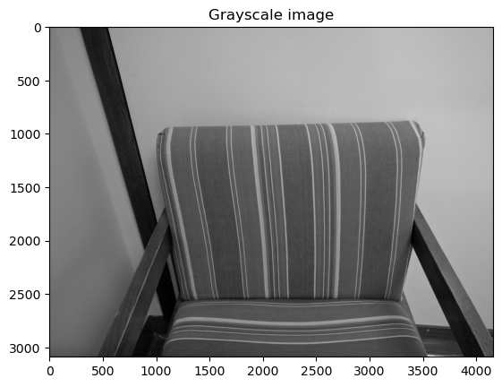
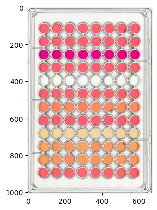
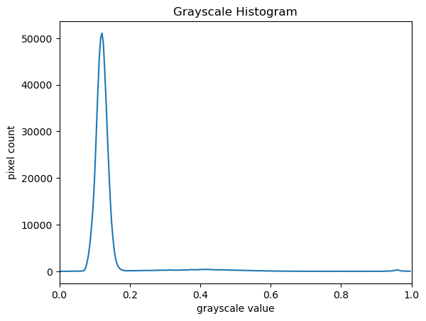
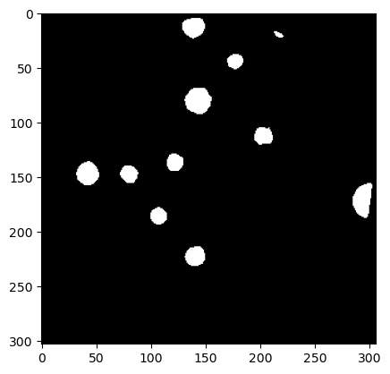
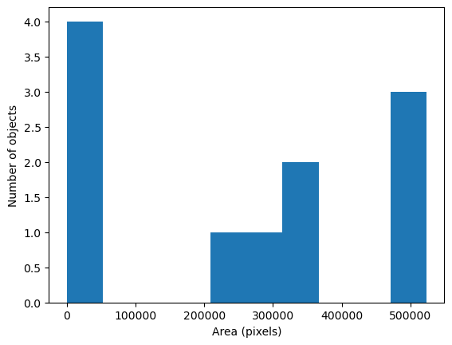

# Python libraries for learning and performing image processing
import numpy as np
import matplotlib.pyplot as plt
import ipympl
import imageio.v3 as iio
import skimageIntroduction
As computer systems have become faster and more powerful, and cameras and other imaging systems have become commonplace in many other areas of life, the need has grown for researchers to be able to process and analyse image data. Considering the large volumes of data that can be involved - high-resolution images that take up a lot of disk space/virtual memory, and/or collections of many images that must be processed together - and the time-consuming and error-prone nature of manual processing, it can be advantageous or even necessary for this processing and analysis to be automated as a computer program.
This blog introduces an open source toolkit for processing image data: the Python programming language and the scikit-image (skimage) library. With careful experimental design, Python code can be a powerful instrument in answering many different kinds of questions.
Uses of Image Processing in Research
Automated processing can be used to analyse many different properties of an image, including the distribution and change in colours in the image, the number, size, position, orientation, and shape of objects in the image, and even - when combined with machine learning techniques for object recognition - the type of objects in the image.
Some examples of image processing methods applied in research include:
- imaging a Black Hole
- estimating the population of Emperor Penguins
- the global-scale analysis of marine plankton diversity
- segmentation of liver and vessels from CT images
This blog aims to provide a thorough grounding in the fundamental concepts and skills of working with image data in Python. Most of the examples used focus on one particular class of image processing technique, morphometrics, but what we will learn can be used to solve a much wider range of problems.
Morphometrics
Morphometrics involves counting the number of objects in an image, analyzing the size of the objects, or analyzing the shape of the objects. For example, we might be interested in automatically counting the number of bacterial colonies growing in a Petri dish.

We could use image processing to find the colonies, count them, and then highlight their locations on the original image.
Note that we can easily manually count the number of bacteria colonies shown in the morphometric example above. So, why should we learn how to write a Python program to do a task we could easily perform with our own eyes? There are at least two reasons to learn how to perform tasks like these with Python and skimage:
What if there are many more bacteria colonies in the Petri dish? For example, suppose the image looked like this: Manually counting the colonies in that image would present more of a challenge. A Python program using skimage could count the number of colonies more accurately, and much more quickly, than a human could.
What if we have hundreds, or thousands, of images to consider? Imagine having to manually count colonies on several thousand images like those above. A Python program using skimage could move through all of the images in seconds; how long would a graduate student require to do the task? Which process would be more accurate and repeatable?
As we can see, the simple image processing / computer vision techniques we will learn during this blog can be very valuable tools for scientific research. As we progress, we will learn image analysis methods useful for many different scientific problems. Let’s get started, by learning some basics about how images are represented and stored digitally.
Key Points:
- Simple Python and skimage (scikit-image) techniques can be used to solve genuine image analysis problems
- Morphometric problems involve the number, shape, and / or size of the objects in an image
1. Image Basics
The images we see on hard copy, view with our electronic devices, or process with our programs are represented and stored in the computer as numeric abstractions, approximations of what we see with our eyes in the real world. Before we begin to learn how to process images with Python programs, we need to spend some time understanding how these abstractions work.
Pixels
It is important to realise that images are stored as rectangular arrays of hundreds, thousands, or millions of discrete “picture elements,” otherwise known as pixels. Each pixel can be thought of as a single square point of coloured light. For example, consider this image of a maize seedling, with a square area designated by a red box:
Now, if we zoomed in close enough to see the pixels in the red box, we would see something like this:
Note that each square in the enlarged image area - each pixel - is all one colour, but that each pixel can have a different colour from its neighbours. Viewed from a distance, these pixels seem to blend together to form the image we see.
Working with Pixels
As noted, in practice, real world images will typically be made up of a vast number of pixels, and each of these pixels will be one of potentially millions of colours. While we will deal with pictures of such complexity shortly, let’s start our exploration with 15 pixels in a 5 X 3 matrix with 2 colours and work our way up to that complexity.
Matrices, arrays, images and pixels
The matrix is mathematical concept - numbers evenly arranged in a rectangle. This can be a two dimensional rectangle, like the shape of the screen you’re looking at now. Or it could be a three dimensional equivalent, a cuboid, or have even more dimensions, but always keeping the evenly spaced arrangement of numbers. In computing, array refers to a structure in the computer’s memory where data is stored in evenly-spaced elements. This is strongly analogous to a matrix. A numpy array is a type of variable (a simpler example of a type is an integer). For our purposes, the distinction between matrices and arrays is not important, we don’t really care how the computer arranges our data in its memory. The important thing is that the computer stores values describing the pixels in images, as arrays. And the terms matrix and array can be used interchangeably.
First, the necessary imports:
Import Statements in Python
In Python, the import statement is used to load additional functionality into a program. This is necessary when we want our code to do something more specialised, which cannot easily be achieved with the limited set of basic tools and data structures available in the default Python environment. Additional functionality can be loaded as a single function or object, a module defining several of these, or a library containing many modules. We will encounter several different forms of import statement.
# form 1, load whole skimage library
import skimage
# form 2, load skimage.draw module only
import skimage.draw
# form 3, load only the disk function
from skimage.draw import disk
# form 4, load all of numpy into an object called np
import numpy as np Now that we have our libraries loaded, we will run a Jupyter Magic Command that will ensure our images display in our Jupyter document with pixel information that will help us more efficiently run commands later in the session.
%matplotlib inlineWith that taken care of, let’s load our image data from disk using the imread function from the imageio.v3 module and display it using the imshow function from the matplotlib.pyplot module. imageio is a Python library for reading and writing image data. imageio.v3 is specifying that we want to use version 3 of imageio. This version has the benefit of supporting nD (multidimensional) image data natively (think of volumes, movies).
Why not use skimage.io.imread()
The skimage library has its own function to read an image, so you might be asking why we don’t use it here. Actually, skimage.io.imread() uses iio.imread() internally when loading an image into Python. It is certainly something you may use as you see fit in your own code. In this lesson, we use the imageio library to read or write (save) images, while skimage is dedicated to performing operations on the images. Using imageio gives us more flexibility, especially when it comes to handling metadata.
from skimage import data, io
from matplotlib import pyplot as plt
image = iio.imread(uri="Images/eight.tif")
plt.imshow(image)<matplotlib.image.AxesImage at 0x7f29490f2fe0>You might be thinking, “That does look vaguely like an eight, and I see two colours but how can that be only 15 pixels”. The display of the eight you see does use a lot more screen pixels to display our eight so large, but that does not mean there is information for all those screen pixels in the file. All those extra pixels are a consequence of our viewer creating additional pixels through interpolation. It could have just displayed it as a tiny image using only 15 screen pixels if the viewer was designed differently.
While many image file formats contain descriptive metadata that can be essential, the bulk of a picture file is just arrays of numeric information that, when interpreted according to a certain rule set, become recognizable as an image to us. Our image of an eight is no exception, and imageio.v3 stored that image data in an array of arrays making a 5 x 3 matrix of 15 pixels. We can demonstrate that by calling on the shape property of our image variable and see the matrix by printing our image variable to the screen.
print(image.shape)
print(image)(5, 3)
[[0. 0. 0.]
[0. 1. 0.]
[0. 0. 0.]
[0. 1. 0.]
[0. 0. 0.]]Thus if we have tools that will allow us to manipulate these arrays of numbers, we can manipulate the image. The numpy library can be particularly useful here, so let’s try that out using numpy array slicing. Notice that the default behavior of the imshow function appended row and column numbers that will be helpful to us as we try to address individual or groups of pixels. First let’s load another copy of our eight, and then make it look like a zero.
To make it look like a zero, we need to change the number underlying the centremost pixel to be 1. With the help of those row and column headers, at this small scale we can determine the centre pixel is in row labeled 2 and column labeled 1. Using array slicing, we can then address and assign a new value to that position.
zero = iio.imread(uri=“Images/eight.tif”) zero[2,1]= 1.0 ““” The following line of code creates a new figure for imshow to use in displaying our output. Without it, plt.imshow() would overwrite our previous image in the cell above ““” fig, ax = plt.subplots() plt.imshow(zero) print(zero)
Co-ordinate system
When we process images, we can access, examine, and / or change the colour of any pixel we wish. To do this, we need some convention on how to access pixels individually; a way to give each one a name, or an address of a sort. The most common manner to do this, and the one we will use in our programs, is to assign a modified Cartesian coordinate system to the image. The coordinate system we usually see in mathematics has a horizontal x-axis and a vertical y-axis, like this:
The modified coordinate system used for our images will have only positive coordinates, the origin will be in the upper left corner instead of the centre, and y coordinate values will get larger as they go down instead of up, like this:
This is called a left-hand coordinate system. If you hold your left hand in front of your face and point your thumb at the floor, your extended index finger will correspond to the x-axis while your thumb represents the y-axis.
The most common mistake made with coordinates is to forget that y coordinates get larger as they go down instead of up as in a normal Cartesian coordinate system.
Consequently, it may be helpful to think in terms of counting down rows (r) for the y-axis and across columns (c) for the x-axis. This can be especially helpful in cases where you need to transpose image viewer data provided in x,y format to y,x format. Thus, we will use cx and ry where appropriate to help bridge these two approaches.
Changing pixel values
Let’s load another copy of eight named five, and then change the value of pixels so you have what looks like a 5 instead of an 8. There are many possible solutions, but one method would be . . .
five = iio.imread(uri="Images/eight.tif")
five[1,2]= 1.0
five[3,0]= 1.0
fig, ax = plt.subplots()
plt.imshow(five)
print(five)[[0. 0. 0.]
[0. 1. 1.]
[0. 0. 0.]
[1. 1. 0.]
[0. 0. 0.]]More colours
Up to now, we only had a 2 colour matrix, but we can have more if we use other numbers or fractions. One common way is to use the numbers between 0 and 255 to allow for 256 different colours or 256 different levels of grey. Let’s try that out:
# make a copy of eight
three_colours = iio.imread(uri="Images/eight.tif")
# multiply the whole matrix by 128
three_colours = three_colours * 128
# set the middle row (index 2) to the value of 255.,
# so you end up with the values 0., 128., and 255.
three_colours[2,:] = 255.
fig, ax = plt.subplots()
plt.imshow(three_colours)
print(three_colours)[[ 0. 0. 0.]
[ 0. 128. 0.]
[255. 255. 255.]
[ 0. 128. 0.]
[ 0. 0. 0.]]We now have 3 colours, but are they the three colours you expected? They all appear to be on a continuum of dark purple on the low end and yellow on the high end. This is a consequence of the default colour map (cmap) in this library. You can think of a colour map as an association or mapping of numbers to a specific colour. However, the goal here is not to have one number for every possible colour, but rather to have a continuum of colours that demonstrate relative intensity. In our specific case here for example, 255 or the highest intensity is mapped to yellow, and 0 or the lowest intensity is mapped to a dark purple. The best colour map for your data will vary and there are many options built in, but this default selection was not arbitrary. A lot of science went into making this the default due to its robustness when it comes to how the human mind interprets relative colour values, grey-scale printability, and colour-blind friendliness (You can read more about this default colour map in a Matplotlib tutorial and an explanatory article by the authors). Thus it is a good place to start, and you should change it only with purpose and forethought. For now, let’s see how you can do that using an alternative map you have likely seen before where it will be even easier to see it as a mapped continuum of intensities: greyscale.
fig, ax = plt.subplots()
plt.imshow(three_colours,cmap=plt.cm.gray)<matplotlib.image.AxesImage at 0x7f294bdd79d0>Above we have exactly the same underying data matrix, but in greyscale. Zero maps to black, 255 maps to white, and 128 maps to medium grey. Here we only have a single channel in the data and utilize a grayscale color map to represent the luminance, or intensity of the data and correspondingly this channel is referred to as the luminance channel.
Even More Colours
This is all well and good at this scale, but what happens when we instead have a picture of a natural landscape that contains millions of colours. Having a one to one mapping of number to colour like this would be inefficient and make adjustments and building tools to do so very difficult. Rather than larger numbers, the solution is to have more numbers in more dimensions. Storing the numbers in a multi-dimensional matrix where each colour or property like transparency is associated with its own dimension allows for individual contributions to a pixel to be adjusted independently. This ability to manipulate properties of groups of pixels separately will be key to certain techniques explored in later chapters of this lesson.
To get started let’s see an example of how different dimensions of information combine to produce a set of pixels using a 4 X 4 matrix with 3 dimensions for the colours red, green, and blue. Rather than loading it from a file, we will generate this example using NumPy.
# set the random seed so we all get the same matrix
pseudorandomizer = np.random.RandomState(2021)
# create a 4 × 4 checkerboard of random colours
checkerboard = pseudorandomizer.randint(0, 255, size=(4, 4, 3))
# restore the default map as you show the image
fig, ax = plt.subplots()
plt.imshow(checkerboard)
# display the arrays
print(checkerboard)[[[116 85 57]
[128 109 94]
[214 44 62]
[219 157 21]]
[[ 93 152 140]
[246 198 102]
[ 70 33 101]
[ 7 1 110]]
[[225 124 229]
[154 194 176]
[227 63 49]
[144 178 54]]
[[123 180 93]
[120 5 49]
[166 234 142]
[ 71 85 70]]]Previously we had one number being mapped to one colour or intensity. Now we are combining the effect of 3 numbers to arrive at a single colour value. Let’s see an example of that using the blue square at the end of the second row, which has the index [row, column][1, 3]. Note that in Python indexing starts at zero.
# extract all the colour information for the blue square
upper_right_square = checkerboard[1, 3, :]
upper_right_squarearray([ 7, 1, 110])The integers in order represent
- Red: 7
- Green: 1
- Blue: 3
Looking at theses three values and knowing how they map, can help us understand why it is blue. If we divide each value by 255, which is the maximum, we can determine how much it is contributing relative to its maximum potential. Effectively, the red is at 7/255 or 2.8 percent of its potential, the green is at 1/255 or 0.4 percent, and blue is 110/255 or 43.1 percent of its potential. So when you mix those three intensities of colour, blue is winning by a wide margin, but the red and green still contribute to make it a slightly different shade of blue than 0,0,110 would be on its own.
These colours mapped to dimensions of the matrix may be referred to as channels. It may be helpful to display each of these channels independently, to help us understand what is happening. We can do that by multiplying our image array representation with a 1d matrix that has a one for the channel we want to keep and zeros for the rest.
# transform array to focus only on the red channel (green and blue channels effectively removed by multiplying by zero)
red_channel = checkerboard * [1, 0, 0]
fig, ax = plt.subplots()
plt.imshow(red_channel)<matplotlib.image.AxesImage at 0x7f2949357580># transform array to focus only on the green channel (red and blue channels effectively removed by multiplying by zero)
green_channel = checkerboard * [0, 1, 0]
fig, ax = plt.subplots()
plt.imshow(green_channel)<matplotlib.image.AxesImage at 0x7f29491dae60># transform array to focus only on the blue channel (red and green channels effectively removed by multiplying by zero)
blue_channel = checkerboard * [0, 0, 1]
fig, ax = plt.subplots()
plt.imshow(blue_channel)<matplotlib.image.AxesImage at 0x7f2949248700>If we look at the upper [1, 3] square in all three figures, we can see each of those colour contributions in action. Notice that there are several squares in the blue figure that look even more intensely blue than square [1, 3]. When all three channels are combined though, the blue light of those squares is being diluted by the relative strength of red and green being mixed in with them.
24-bit RGB Colour
This last colour model we used, known as the RGB (Red, Green, Blue) model, is the most common. As we saw, the RGB model is an additive colour model, which means that the primary colours are mixed together to form other colours. Most frequently, the amount of the primary colour added is represented as an integer in the closed range [0, 255] as seen in the example. Therefore, there are 256 discrete amounts of each primary colour that can be added to produce another colour. The number of discrete amounts of each colour, 256, corresponds to the number of bits used to hold the colour channel value, which is eight (28=256). Since we have three channels with 8 bits for each (8+8+8=24), this is called 24-bit colour depth.
Any particular colour in the RGB model can be expressed by a triplet of integers in [0, 255], representing the red, green, and blue channels, respectively. A larger number in a channel means that more of that primary colour is present.
Suppose that we represent colours as triples (r, g, b), where each of r, g, and b is an integer in [0, 255]. What colours are represented by each of these triples? 1.(255, 0, 0) 2.(0, 255, 0) 3.(0, 0, 255) 4.(255, 255, 255) 5.(0, 0, 0) 6.(128, 128, 128)
- (255, 0, 0) represents red, because the red channel is maximised, while the other two channels have the minimum values
- (0, 255, 0) represents green
- (0, 0, 255) represents blue
- (255, 255, 255) is a little harder. When we mix the maximum value of all three colour channels, we see the colour white
- (0, 0, 0) represents the absence of all colour, or black
- (128, 128, 128) represents a medium shade of gray. Note that the 24-bit RGB colour model provides at least 254 shades of gray, rather than only fifty
Note that the RGB colour model may run contrary to your experience, especially if you have mixed primary colours of paint to create new colours. In the RGB model, the lack of any colour is black, while the maximum amount of each of the primary colours is white. With physical paint, we might start with a white base, and then add differing amounts of other paints to produce a darker shade.
We can look at some further examples of 24-bit RGB colours, in a visual way. The image below shows some colour names, their 24-bit RGB triplet values, and the colour itself:
We cannot really provide a complete table. To see why, answer this question: How many possible colours can be represented with the 24-bit RGB model?
There are 24 total bits in an RGB colour of this type, and each bit can be on or off, and so there are \(2^{24}\) = 16,777,216 possible colours with our additive, 24-bit RGB colour model.
Although 24-bit colour depth is common, there are other options. We might have 8-bit colour (3 bits for red and green, but only 2 for blue, providing 8 × 8 × 4 = 256 colours) or 16-bit colour (4 bits for red, green, and blue, plus 4 more for transparency, providing 16 × 16 × 16 = 4096 colours), for example. There are colour depths with more than eight bits per channel, but as the human eye can only discern approximately 10 million different colours, these are not often used.
If you are using an older or inexpensive laptop screen or LCD monitor to view images, it may only support 18-bit colour, capable of displaying 64 × 64 × 64 = 262,144 colours. 24-bit colour images will be converted in some manner to 18-bit, and thus the colour quality you see will not match what is actually in the image.
We can combine our coordinate system with the 24-bit RGB colour model to gain a conceptual understanding of the images we will be working with. An image is a rectangular array of pixels, each with its own coordinate. Each pixel in the image is a square point of coloured light, where the colour is specified by a 24-bit RGB triplet. Such an image is an example of raster graphics.
Image formats
Although the images we will manipulate in our programs are conceptualised as rectangular arrays of RGB triplets, they are not necessarily created, stored, or transmitted in that format. There are several image formats we might encounter, and we should know the basics of at least of few of them. Some formats we might encounter, and their file extensions, are shown in this table:
Device-Independent Bitmap (BMP)
The file format that comes closest to our preceding conceptualisation of images is the Device-Independent Bitmap, or BMP, file format. BMP files store raster graphics images as long sequences of binary-encoded numbers that specify the colour of each pixel in the image. Since computer files are one-dimensional structures, the pixel colours are stored one row at a time. That is, the first row of pixels (those with y-coordinate 0) are stored first, followed by the second row (those with y-coordinate 1), and so on. Depending on how it was created, a BMP image might have 8-bit, 16-bit, or 24-bit colour depth.
24-bit BMP images have a relatively simple file format, can be viewed and loaded across a wide variety of operating systems, and have high quality. However, BMP images are not compressed, resulting in very large file sizes for any useful image resolutions.
The idea of image compression is important to us for two reasons: first, compressed images have smaller file sizes, and are therefore easier to store and transmit; and second, compressed images may not have as much detail as their uncompressed counterparts, and so our programs may not be able to detect some important aspect if we are working with compressed images. Since compression is important to us, we should take a brief detour and discuss the concept.
Image compression
Before we talk specifically about images, we first need to understand how numbers are stored in a modern digital computer. When we think of a number, we do so using a decimal, or base-10 place-value number system. For example, a number like 659 is 6 × 102 + 5 × 101 + 9 × 100. Each digit in the number is multiplied by a power of 10, based on where it occurs, and there are 10 digits that can occur in each position (0, 1, 2, 3, 4, 5, 6, 7, 8, 9).
In principle, computers could be constructed to represent numbers in exactly the same way. But, the electronic circuits inside a computer are much easier to construct if we restrict the numeric base to only two, instead of 10. (It is easier for circuitry to tell the difference between two voltage levels than it is to differentiate among 10 levels.) So, values in a computer are stored using a binary, or base-2 place-value number system.
In this system, each symbol in a number is called a bit instead of a digit, and there are only two values for each bit (0 and 1). We might imagine a four-bit binary number, 1101. Using the same kind of place-value expansion as we did above for 659, we see that 1101 = 1 × 23 + 1 × 22 + 0 × 21 + 1 × 20, which if we do the math is 8 + 4 + 0 + 1, or 13 in decimal.
Internally, computers have a minimum number of bits that they work with at a given time: eight. A group of eight bits is called a byte. The amount of memory (RAM) and drive space our computers have is quantified by terms like Megabytes (MB), Gigabytes (GB), and Terabytes (TB). The following table provides more formal definitions for these terms:
Imagine that we have a fairly large, but very boring image: a 5,000 × 5,000 pixel image composed of nothing but white pixels. If we used an uncompressed image format such as BMP, with the 24-bit RGB colour model, how much storage would be required for the file?
In such an image, there are 5,000 × 5,000 = 25,000,000 pixels, and 24 bits for each pixel, leading to 25,000,000 × 24 = 600,000,000 bits, or 75,000,000 bytes (71.5MB). That is quite a lot of space for a very uninteresting image!
Since image files can be very large, various compression schemes exist for saving (approximately) the same information while using less space. These compression techniques can be categorised as lossless or lossy.
Lossless compression
In lossless image compression, we apply some algorithm (i.e., a computerised procedure) to the image, resulting in a file that is significantly smaller than the uncompressed BMP file equivalent would be. Then, when we wish to load and view or process the image, our program reads the compressed file, and reverses the compression process, resulting in an image that is identical to the original. Nothing is lost in the process – hence the term “lossless.”
The general idea of lossless compression is to somehow detect long patterns of bytes in a file that are repeated over and over, and then assign a smaller bit pattern to represent the longer sample. Then, the compressed file is made up of the smaller patterns, rather than the larger ones, thus reducing the number of bytes required to save the file. The compressed file also contains a table of the substituted patterns and the originals, so when the file is decompressed it can be made identical to the original before compression.
To provide you with a concrete example, consider the 71.5 MB white BMP image discussed above. When put through the zip compression utility on Microsoft Windows, the resulting .zip file is only 72 KB in size! That is, the .zip version of the image is three orders of magnitude smaller than the original, and it can be decompressed into a file that is byte-for-byte the same as the original. Since the original is so repetitious - simply the same colour triplet repeated 25,000,000 times - the compression algorithm can dramatically reduce the size of the file.
If you work with .zip or .gz archives, you are dealing with lossless compression.
Lossy compression
Lossy compression takes the original image and discards some of the detail in it, resulting in a smaller file format. The goal is to only throw away detail that someone viewing the image would not notice. Many lossy compression schemes have adjustable levels of compression, so that the image creator can choose the amount of detail that is lost. The more detail that is sacrificed, the smaller the image files will be - but of course, the detail and richness of the image will be lower as well.
This is probably fine for images that are shown on Web pages or printed off on 4 × 6 photo paper, but may or may not be fine for scientific work. You will have to decide whether the loss of image quality and detail are important to your work, versus the space savings afforded by a lossy compression format.
It is important to understand that once an image is saved in a lossy compression format, the lost detail is just that - lost.
Unlike lossless formats, given an image saved in a lossy format, there is no way to reconstruct the original image in a byte-by-byte manner.
JPEG
JPEG images are perhaps the most commonly encountered digital images today. JPEG uses lossy compression, and the degree of compression can be tuned to your liking. It supports 24-bit colour depth, and since the format is so widely used, JPEG images can be viewed and manipulated easily on all computing platforms.
Let us see the effects of image compression on image size with actual images. The following script creates a square white image 5000 X 5000 pixels, and then saves it as a BMP and as a JPEG image.
import imageio.v3 as iio
import numpy as np
dim = 5000
img = np.zeros((dim, dim, 3), dtype="uint8")
img.fill(255)
iio.imwrite(uri="Images/ws.bmp", image=img)
iio.imwrite(uri="Images/ws.jpg", image=img)
The BMP file, ws.bmp, is 75,000,054 bytes, which matches our prediction very nicely. The JPEG file, ws.jpg, is 392,503 bytes, two orders of magnitude smaller than the bitmap version.
Let us see a hands-on example of lossless versus lossy compression. Once again, open a terminal and navigate to the data/ directory. The two output images, ws.bmp and ws.jpg, should still be in the directory, along with another image, tree.jpg.
We can apply lossless compression to any file by using the zip command. Recall that the ws.bmp file contains 75,000,054 bytes. Apply lossless compression to this image by executing the following command:
zip ws.zip ws.bmp. This command tells the computer to create a new compressed file, ws.zip, from the original bitmap image. Execute a similar command on the tree JPEG file:
zip tree.zip tree.jpg.Having created the compressed file, use the ls -al command to display the contents of the directory.
- How big are the compressed files?
- How do those compare to the size of ws.bmp and tree.jpg?
- What can you conclude from the relative sizes?
The tree.jpg has not reduced in size as this was already in a compressed format. However the regularity of the bitmap image (remember, it is a 5,000 x 5,000 pixel image containing only white pixels) allows the lossless compression scheme to compress the ws.bmp file quite effectivelym reducing the size from 7,500,054 bytes (71.52Mb) to 72,998 bytes (71.29kb).
Here is an example showing how JPEG compression might impact image quality. Consider this image of several maize seedlings (scaled down here from 11,339 × 11,336 pixels in order to fit the display):
Now, let us zoom in and look at a small section of the label in the original, first in the uncompressed format:
Here is the same area of the image, but in JPEG format. We used a fairly aggressive compression parameter to make the JPEG, in order to illustrate the problems you might encounter with the format.
The JPEG image is of clearly inferior quality. It has less colour variation and noticeable pixelation. Quality differences become even more marked when one examines the colour histograms for each image. A histogram shows how often each colour value appears in an image. The histograms for the uncompressed (left) and compressed (right) images are shown below:

We learn how to make histograms such as these later on in the workshop. The differences in the colour histograms are even more apparent than in the images themselves; clearly the colours in the JPEG image are different from the uncompressed version.
If the quality settings for your JPEG images are high (and the compression rate therefore relatively low), the images may be of sufficient quality for your work. It all depends on how much quality you need, and what restrictions you have on image storage space. Another consideration may be where the images are stored. For example,if your images are stored in the cloud and therefore must be downloaded to your system before you use them, you may wish to use a compressed image format to speed up file transfer time.
PNG
PNG images are well suited for storing diagrams. It uses a lossless compression and is hence often used in web applications for non-photographic images. The format is able to store RGB and plain luminance (single channel, without an associated color) data, among others. Image data is stored row-wise and then, per row, a simple filter, like taking the difference of adjacent pixels, can be applied to increase the compressability of the data. The filtered data is then compressed in the next step and written out to the disk.
TIFF
TIFF images are popular with publishers, graphics designers, and photographers. TIFF images can be uncompressed, or compressed using either lossless or lossy compression schemes, depending on the settings used, and so TIFF images seem to have the benefits of both the BMP and JPEG formats. The main disadvantage of TIFF images (other than the size of images in the uncompressed version of the format) is that they are not universally readable by image viewing and manipulation software.
Metadata
JPEG and TIFF images support the inclusion of metadata in images. Metadata is textual information that is contained within an image file. Metadata holds information about the image itself, such as when the image was captured, where it was captured, what type of camera was used and with what settings, etc. We normally don’t see this metadata when we view an image, but we can view it independently if we wish to (see Accessing Metadata, below). The important thing to be aware of at this stage is that you cannot rely on the metadata of an image being fully preserved when you use software to process that image.
The image reader/writer library that we use throughout this blog, imageio.v3, includes metadata when saving new images but may fail to keep certain metadata fields.
If metadata is important to you, take precautions to always preserve the original files.
Metadata is served independently from pixel data. imageio.v3 provides a way to display or explore the metadata associated with an image:
# read metadata
metadata = iio.immeta(uri='Images/eight.tif')
# display the format-specific metadata
metadata{'is_fluoview': False,
'is_nih': False,
'is_micromanager': False,
'is_ome': False,
'is_lsm': False,
'is_reduced': False,
'is_shaped': True,
'is_stk': False,
'is_tiled': False,
'is_mdgel': False,
'compression': <COMPRESSION.NONE: 1>,
'predictor': 1,
'is_mediacy': False,
'description': '{"shape": [5, 3]}',
'description1': '',
'is_imagej': False,
'software': 'tifffile.py',
'resolution_unit': 1,
'resolution': (1.0, 1.0, 'NONE')}Other software exists that can help you handle metadata, such as Fiji and ImageMagick. You may want to explore these options if you need to work with the metadata of your images.
Summary of image formats used in this blog
The following table summarises the characteristics of the BMP, JPEG, and TIFF image formats:
Key Points:
- digital images are represented as rectangular arrays of square pixels.
- digital images use a left-hand coordinate system, with the origin in the upper left corner, the x-axis running to the right, and the y-axis running down. Some learners may prefer to think in terms of counting down rows for the y-axis and across columns for the x-axis. Thus, we will make an effort to allow for both approaches in our lesson presentation.
- most frequently, digital images use an additive RGB model, with eight bits for the red, green, and blue channels.
- skimage images are stored as multi-dimensional NumPy arrays.
- in skimage images, the red channel is specified first, then the green, then the blue, i.e., RGB.
- lossless compression retains all the details in an image, but lossy compression results in loss of some of the original image detail.
- BMP images are uncompressed, meaning they have high quality but also that their file sizes are large.
- JPEG images use lossy compression, meaning that their file sizes are smaller, but image quality may suffer.
- TIFF images can be uncompressed or compressed with lossy or lossless compression.
- depending on the camera or sensor, various useful pieces of information may be stored in an image file, in the image metadata.
2. Working with skimage
In the previous section we covered much of how images are represented in computer software. In this section we will learn some more methods for accessing and changing digital images.
Reading, displaying, and saving images
Imageio provides intuitive functions for reading and writing (saving) images. All of the popular image formats, such as BMP, PNG, JPEG, and TIFF are supported, along with several more esoteric formats. Check the Supported Formats docs for a list of all formats. Matplotlib provides a large collection of plotting utilities.
Let us examine a simple Python program to load, display, and save an image to a different format. First, we import the v3 module of imageio (imageio.v3) as iio so we can read and write images. Then, we use the iio.imread() function to read a JPEG image entitled chair.jpg. Here are the first few lines:
# Python program to open, display, and save an image.
import imageio.v3 as iio
# read image
image = iio.imread(uri='Images/chair.jpg')Next, we will do something with the image. Once we have the image in the program, we first call plt.subplots() so that we will have a fresh figure with a set of axis independent from our previous calls. Next we call plt.imshow() in order to display the image:
import matplotlib.pyplot as plt
fig, ax = plt.subplots()
plt.imshow(image)<matplotlib.image.AxesImage at 0x7f0839e0da80>Now, we will save the image in another format:
# save a new version in .tif format
iio.imwrite(uri="Images/chair.tif", image=image)The final statement in the program, iio.imwrite(uri=“data/chair.tif”, image=image), writes the image to a file named chair.tif in our Images/ directory. The imwrite() function automatically determines the type of the file, based on the file extension we provide. In this case, the .tif extension causes the image to be saved as a TIFF.
The iio.imwrite() function automatically uses the file type we specify in the file name parameter’s extension.
Note that this is not always the case. For example, if we are editing a document in Microsoft Word, and we save the document as paper.pdf instead of paper.docx, the file is not saved as a PDF document.
Tip
When we call functions in Python, there are two ways we can specify the necessary arguments. We can specify the arguments positionally, i.e., in the order the parameters appear in the function definition, or we can use named arguments.
For example, the iio.imwrite() function definition specifies two parameters, the resource to save the image to (e.g., a file name, an http address) and the image to write to disk. So, we could save the chair image in the sample code above using positional arguments like this:
iio.imwrite("data/chair.tif", image)Since the function expects the first argument to be the file name, there is no confusion about what “data/chair.jpg” means. The same goes for the second argument.
The style we will use in this workshop is to name each argument, like this:
iio.imwrite(uri="data/chair.tif", image=image)This style will make it easier for you to learn how to use the variety of functions we will cover in this blog.
Resizing an image
Add import skimage.transform and import skimage.util to your list of imports. Using the chair.jpg image located in the data folder, write a Python script to read your image into a variable named image. Then, resize the image to 10 percent of its current size using these lines of code:
import skimage.transform, skimage.util
image = iio.imread(uri='Images/chair.jpg')
# resize to 10% of original size
new_shape = (image.shape[0] // 10, image.shape[1] // 10, image.shape[2])
# image file stored as whole numbers for space efficiency
small = skimage.transform.resize(image=image, output_shape=new_shape)
# converts image back to whole numbers before saving to disk
small = skimage.util.img_as_ubyte(small)As it is used here, the parameters to the skimage.transform.resize() function are the image to transform, image, the dimensions we want the new image to have, new_shape.
Note that the pixel values in the new image are an approximation of the original values and should not be confused with actual, observed data. This is because skimage interpolates the pixel values when reducing or increasing the size of an image. skimage.transform.resize has a number of optional parameters that allow the user to control this interpolation. You can find more details in the scikit-image documentation.
Image files on disk are normally stored as whole numbers for space efficiency, but transformations and other math operations often result in conversion to floating point numbers. Using the skimage.util.img_as_ubyte() method converts it back to whole numbers before we save it back to disk. If we don’t convert it before saving, iio.imwrite() may not recognise it as image data.
Next, write the resized image out to a new file named resized.jpg in your data directory. Finally, use plt.imshow() with each of your image variables to display both images in your notebook. Don’t forget to use fig, ax = plt.subplots() so you don’t overwrite the first image with the second. Images may appear the same size in jupyter, but you can see the size difference by comparing the scales for each. You can also see the differnce in file storage size on disk by hovering your mouse cursor over the original and the new file in the jupyter file browser, using ls -l in your shell, or the OS file browser if it is configured to show file sizes.
# write the resized image out to a new file named resized.jpg
iio.imwrite(uri="Images/resized.jpg", image=small)
# plot original image
fig, ax = plt.subplots()
plt.imshow(image)
plt.title("Original image")
# plot resized image
fig, ax = plt.subplots()
plt.imshow(small)
plt.title("Reduced to 10% of size of original image")Text(0.5, 1.0, 'Reduced to 10% of size of original image')We can see from the above that our reduction to 10% of the original size appears to have been successsful. The axes of the reduced image are 0-300 and 0-400 as against 0-3000 and 0-4000.
The script has: - resized the data/chair.jpg image by a factor of 10 in both dimensions - saved the result to the data/resized.jpg file, and - displays original and resized for comparision
Manipulating pixels
Retaining only high intensity pixels
In section 1, we individually manipulated the colours of pixels by changing the numbers stored in the image’s NumPy array. Let’s apply the principles learned there along with some new principles to a real world example. Suppose we are interested in this maize root cluster image.
We want to be able to focus our program’s attention on the roots themselves, while ignoring the black background.
Since the image is stored as an array of numbers, we can simply look through the array for pixel colour values that are less than some threshold value. This process is called thresholding, and we will see more powerful methods to perform the thresholding task in the Thresholding section.
Here, though, we will look at a simple and elegant NumPy method for thresholding. Let us develop a program that keeps only the pixel colour values in an image that have value greater than or equal to 128. This will keep the pixels that are brighter than half of “full brightness”, i.e., pixels that do not belong to the black background. We will start by reading the image and displaying it.
import imageio.v3 as iio
# read input image
image = iio.imread(uri="Images/maize_cluster.jpg")
# display original image
fig, ax = plt.subplots()
plt.imshow(image)<matplotlib.image.AxesImage at 0x7f4d204fe320>
Now we can threshold the image and display the result:
# keep only high-intensity pixels
image[image < 128] = 0
# display modified image
fig, ax = plt.subplots()
plt.imshow(image)ValueError: assignment destination is read-only
Check if the array is writeable with image.flags
If WRITEABLE is false, change it with img.setflags(write=1)
If after doing this you receive ValueError: cannot set WRITEABLE flag to True of this array, then as a workaround create a copy of the image using image_copy = image.copy()
image.flags C_CONTIGUOUS : True
F_CONTIGUOUS : False
OWNDATA : False
WRITEABLE : False
ALIGNED : True
WRITEBACKIFCOPY : Falseimage.setflags(write=1)ValueError: cannot set WRITEABLE flag to True of this array# workaround to address the read-only issues
image_copy = image.copy()
# keep only high-intensity pixels, by setting all low-intensity pixels < 128 to zero
image_copy[image_copy < 128] = 0
# display modified image
fig, ax = plt.subplots()
plt.imshow(image_copy)<matplotlib.image.AxesImage at 0x7f4d11f9c4c0>The result is an image in which the extraneous background detail has been removed.
Converting colour images to grayscale
It is often easier to work with grayscale images, which have a single channel, instead of colour images, which have three channels. Skimage offers the function skimage.color.rgb2gray() to achieve this. This function adds up the three colour channels in a way that matches human colour perception, see the skimage documentation for details. It returns a grayscale image with floating point values in the range from 0 to 1. We can use the function skimage.util.img_as_ubyte() in order to convert it back to the original data type and the data range back 0 to 255. Note that it is often better to use image values represented by floating point values, because using floating point numbers is numerically more stable.
skimage contains many modules and functions that include the US English spelling, color.
The exact spelling matters here, e.g. you will encounter an error if you try to run skimage.colour.rgb2gray(). To account for this, we will use the US English spelling, color, in example Python code throughout this blog. We will adopt a similar approach with “centre” and center.
import imageio.v3 as iio
import skimage.color
# read input image
image = iio.imread(uri="Images/chair.jpg")
# display original image
fig, ax = plt.subplots()
plt.imshow(image)
plt.title("Original image")
# convert to grayscale and display
gray_image = skimage.color.rgb2gray(image)
fig, ax = plt.subplots()
plt.imshow(gray_image, cmap="gray")
plt.title("Grayscale image")Text(0.5, 1.0, 'Grayscale image')
We also load colour images as grayscale directly by passing the argument mode=“L” to iio.imread():
import imageio.v3 as iio
import skimage.color
# read input image, based on filename parameter
image = iio.imread(uri="Images/chair.jpg", mode="L")
# display grayscale image
fig, ax = plt.subplots()
plt.imshow(image, cmap="gray")
plt.title("Grayscale image")Text(0.5, 1.0, 'Grayscale image')
Retaining only low intensity pixels
A little earlier, we showed how we could use Python and skimage to turn on only the high intensity pixels from an image, while turning all the low intensity pixels off. Now, let’s practice doing the opposite - keeping all the low intensity pixels while changing the high intensity ones, by turning all of the white pixels in the image to a light gray colour, say with the intensity of each formerly white pixel set to 0.75:
# read input image, based on filename parameter
sudoku = iio.imread(uri="Images/sudoku.png", mode="L")
# display grayscale image
fig, ax = plt.subplots()
plt.imshow(sudoku, cmap="gray")
plt.title("Grayscale image")Text(0.5, 1.0, 'Grayscale image')# Clip all high intensity pixels > 0.75 to 0.75
sudoku[sudoku > 0.75] = 0.75
# display modified image
fig, ax = plt.subplots()
plt.imshow(sudoku, cmap="gray", vmin=0, vmax=1)Plotting single channel images (cmap, vmin, vmax)
Compared to a colour image, a grayscale image contains only a single intensity value per pixel. When we plot such an image with plt.imshow, matplotlib uses a colour map, to assign each intensity value a colour. The default colour map is called “viridis” and maps low values to purple and high values to yellow. We can instruct matplotlib to map low values to black and high values to white instead, by calling plt.imshow with cmap=“gray”. The documentation contains an overview of pre-defined colour maps.
Furthermore, matplotlib determines the minimum and maximum values of the colour map dynamically from the image, by default. That means, that in an image, where the minimum is 0.25 and the maximum is 0.75, those values will be mapped to black and white respectively (and not dark gray and light gray as you might expect). If there are defined minimum and maximum vales, you can specify them via vmin and vmax to get the desired output. If you forget about this, it can lead to unexpected results.
Access via slicing
As noted in the previous section skimage images are stored as NumPy arrays, so we can use array slicing to select rectangular areas of an image. Then, we can save the selection as a new image, change the pixels in the image, and so on. It is important to remember that coordinates are specified in (ry, cx) order and that colour values are specified in (r, g, b) order when doing these manipulations.
Consider this image of a whiteboard, and suppose that we want to create a sub-image with just the portion that says “odd + even = odd,” along with the red box that is drawn around the words.
Using the same display technique we have used throughout this blog, we can determine the coordinates of the corners of the area we wish to extract by hovering the mouse near the points of interest and noting the coordinates. If we do that, we might settle on a rectangular area with an upper-left coordinate of (135, 60) and a lower-right coordinate of (480, 150), as shown in this version of the whiteboard picture:
Note that the coordinates in the preceding image are specified in (cx, ry) order. Now if our entire whiteboard image is stored as an skimage image named image, we can create a new image of the selected region with a statement like this:
clip = image[60:151, 135:481, :]Our array slicing specifies the range of y-coordinates or rows first, 60:151, and then the range of x-coordinates or columns, 135:481. Note we go one beyond the maximum value in each dimension, so that the entire desired area is selected. The third part of the slice, :, indicates that we want all three colour channels in our new image.
A script to create the subimage would start by loading the image:
import imageio.v3 as iio
# load and display original image
image = iio.imread(uri="Images/board.jpg")
fig, ax = plt.subplots()
plt.imshow(image)<matplotlib.image.AxesImage at 0x7f2f93077220>Then we use array slicing to create a new image with our selected area and then display the new image:
# extract, display, and save sub-image
clip = image[60:151, 135:481, :]
fig, ax = plt.subplots()
plt.imshow(clip)
iio.imwrite(uri="Images/clip.tif", image=clip)We can also change the values in an image.
First, we sample a single pixel’s colour at a particular location of the image, saving it in a variable named color, which creates a 1 × 1 × 3 NumPy array with the blue, green, and red colour values for the pixel located at (ry = 330, cx = 90).
Then, with the img[60:151, 135:481] = color command, we modify the image in the specified area. From a NumPy perspective, this changes all the pixel values within that range to array saved in the color variable. In this case, the command “erases” that area of the whiteboard, replacing the words with a beige colour, as shown in the final image produced by the program:
# replace clipped area with sampled color
image_copy = image.copy()
color = image_copy[330, 90]
image_copy[60:151, 135:481] = color
fig, ax = plt.subplots()
plt.imshow(image_copy)<matplotlib.image.AxesImage at 0x7f2f9102ffd0>::: {.callout-important}
## Key Points:
- images are read from disk with the iio.imread() function
- we create a window that automatically scales the displayed image with matplotlib and calling show() on the global figure object
- colour images can be transformed to grayscale using skimage.color.rgb2gray() or, in many cases, be read as grayscale directly by passing the argument mode="L" to iio.imread()
- we can resize images with the skimage.transform.resize() function
- NumPy array commands, such as image[image < 128] = 0, can be used to manipulate the pixels of an image.
- array slicing can be used to extract sub-images or modify areas of images, e.g., clip = image[60:150, 135:480, :]
- metadata is not retained when images are loaded as skimage images
:::import imageio.v3 as iio
# load and display original image
image = iio.imread(uri="Images/maize_cluster.jpg")
fig, ax = plt.subplots()
plt.imshow(image)
plt.title("Original image")
# extract, display, and save sub-image
# WRITE YOUR CODE TO SELECT THE SUBIMAGE NAME clip HERE:
clip = image[0:1750, 1500:2500, :]
fig, ax = plt.subplots()
plt.imshow(clip)
plt.title("Clipped image")
# WRITE YOUR CODE TO SAVE clip HERE
iio.imwrite(uri="Images/clip.jpg", image=clip)3. Drawing and Bitwise Operations
The next sections cover a basic toolkit of skimage operators. With these tools, we will be able to create programs to perform simple analyses of images based on changes in colour or shape.
Drawing on images
Often we wish to select only a portion of an image to analyze, and ignore the rest. Creating a rectangular sub-image with slicing, as we did in section 2 is one option for simple cases. Another option is to create another special image, of the same size as the original, with white pixels indicating the region to save and black pixels everywhere else. Such an image is called a mask. In preparing a mask, we sometimes need to be able to draw a shape - a circle or a rectangle, say - on a black image. skimage provides tools to do that.
Consider this image of maize seedlings:
Now, suppose we want to analyze only the area of the image containing the roots themselves; we do not care to look at the kernels, or anything else about the plants. Further, we wish to exclude the frame of the container holding the seedlings as well. Hovering over the image with our mouse, could tell us that the upper-left coordinate of the sub-area we are interested in is (44, 357), while the lower-right coordinate is (720, 740). These coordinates are shown in (x, y) order.
A Python program to create a mask to select only that area of the image would start with a now-familiar section of code to open and display the original image.As before, we first import the v3 submodule of imageio (imageio.v3). We also import the NumPy library, which we need to create the initial mask image. Then, we import the draw submodule of skimage. We load and display the initial image in the same way we have done before.
import imageio.v3 as iio
import skimage.draw
import numpy as np
import matplotlib.pyplot as plt
# Load and display the original image
image = iio.imread(uri="Images/maize-seedlings.tif")
fig, ax = plt.subplots()
plt.imshow(image)<matplotlib.image.AxesImage at 0x7f2f9073cd30>Masking
NumPy allows indexing of images/arrays with “boolean” arrays of the same size. Indexing with a boolean array is also called mask indexing. The “pixels” in such a mask array can only take two values: True or False. When indexing an image with such a mask, only pixel values at positions where the mask is True are accessed. But first, we need to generate a mask array of the same size as the image. Luckily, the NumPy library provides a function to create just such an array. The next section of code shows how:
# Create the basic mask
mask = np.ones(shape=image.shape[0:2], dtype="bool")
color = The first argument to the ones() function is the shape of the original image, so that our mask will be exactly the same size as the original. Notice, that we have only used the first two indices of our shape. We omitted the channel dimension. Indexing with such a mask will change all channel values simultaneously. The second argument, dtype = “bool”, indicates that the elements in the array should be booleans* - i.e., values are either True or False. Thus, even though we use np.ones() to create the mask, its pixel values are in fact not 1 but True. You could check this, e.g., by print(mask[0, 0]).
Next, we draw a filled, rectangle on the mask. The parameters of the rectangle() function (357, 44) and (740, 720), are the coordinates of the upper-left (start) and lower-right (end) corners of a rectangle in (ry, cx) order. The function returns the rectangle as row (rr) and column (cc) coordinate arrays:
# Draw filled rectangle on the mask image
# co-ordinates are (row, column)
# first co-ord is top-left, second co-ord is bottom-right
rr, cc = skimage.draw.rectangle(start=(357, 44), end=(740, 720))
mask[rr, cc] = False
# Display mask image
fig, ax = plt.subplots()
plt.imshow(mask, cmap="gray")<matplotlib.image.AxesImage at 0x7f2f90de33a0>
Check the documentation!
When using an skimage function for the first time - or the fifth time - it is wise to check how the function is used, via the skimage documentation or other usage examples on programming-related sites such as Stack Overflow. Basic information about skimage functions can be found interactively in Python, via commands like help(skimage) or help(skimage.draw.rectangle). Take notes in your lab notebook. And, it is always wise to run some test code to verify that the functions your program uses are behaving in the manner you intend.
Variable naming conventions
You may have wondered why we called the return values of the rectangle function rr and cc?! You may have guessed that r is short for row and c is short for column. However, the rectangle function returns mutiple rows and columns; thus we used a convention of doubling the letter r to rr (and c to cc) to indicate that those are multiple values. In fact it may have even been clearer to name those variables rows and columns; however this would have been also much longer. Whatever you decide to do, try to stick to some already existing conventions, such that it is easier for other people to understand your code.
Other drawing operations
There are other functions for drawing on images, in addition to the skimage.draw.rectangle() function. We can draw circles, lines, text, and other shapes as well. These drawing functions may be useful later on, to help annotate images that our programs produce. Practice some of these functions here.
Circles can be drawn with the skimage.draw.disk() function, which takes two parameters: the (ry, cx) point of the centre of the circle, and the radius of the circle. There is an optional shape parameter that can be supplied to this function. It will limit the output coordinates for cases where the circle dimensions exceed the ones of the image.
Lines can be drawn with the skimage.draw.line() function, which takes four parameters: the (ry, cx) coordinate of one end of the line, and the (ry, cx) coordinate of the other end of the line.
Other drawing functions supported by skimage can be found in the skimage reference pages.
First let’s make an empty, black image with a size of 800x600 pixels:
# create the black canvas
image = np.zeros(shape=(600, 800, 3), dtype="uint8")# Draw a blue circle with centre (200, 300) in (ry, cx) coordinates, and radius 100
rr, cc = skimage.draw.disk(center=(200, 300), radius=100, shape=image.shape[0:2])
image[rr, cc] = (0, 0, 255)# Draw a green line from (400, 200) to (500, 700) in (ry, cx) coordinates
rr, cc = skimage.draw.line(r0=400, c0=200, r1=500, c1=700)
image[rr, cc] = (0, 255, 0)# Display the image
fig, ax = plt.subplots()
plt.imshow(image)<matplotlib.image.AxesImage at 0x7f2f9064a6e0>We could expand this solution, if we wanted, to draw rectangles, circles and lines at random positions within our black canvas. To do this, we could use the random python module, and the function random.randrange, which can produce random numbers within a certain range.
Let’s draw 15 randomly placed circles:
import random
# create the black canvas
image = np.zeros(shape=(600, 800, 3), dtype="uint8")
# draw a blue circle at a random location 15 times
for i in range(15):
rr, cc = skimage.draw.disk(center=(
random.randrange(600),
random.randrange(800)),
radius=50,
shape=image.shape[0:2],
)
image[rr, cc] = (0, 0, 255)
# display the results
fig, ax = plt.subplots()
plt.imshow(image)<matplotlib.image.AxesImage at 0x7f2f906bbaf0>We could expand this even further to also randomly choose whether to plot a rectangle, a circle, or a square. Again, we do this with the random module, now using the function random.random that returns a random number between 0.0 and 1.0.
# Draw 15 random shapes (rectangle, circle or line) at random positions
for i in range(15):
# generate a random number between 0.0 and 1.0 and use this to decide if we
# want a circle, a line or a sphere
x = random.random()
if x < 0.33:
# draw a blue circle at a random location
rr, cc = skimage.draw.disk(center=(
random.randrange(600),
random.randrange(800)),
radius=50,
shape=image.shape[0:2],
)
color = (0, 0, 255)
elif x < 0.66:
# draw a green line at a random location
rr, cc = skimage.draw.line(
r0=random.randrange(600),
c0=random.randrange(800),
r1=random.randrange(600),
c1=random.randrange(800),
)
color = (0, 255, 0)
else:
# draw a red rectangle at a random location
rr, cc = skimage.draw.rectangle(
start=(random.randrange(600), random.randrange(800)),
extent=(50, 50),
shape=image.shape[0:2],
)
color = (255, 0, 0)
image[rr, cc] = color
# display the results
fig, ax = plt.subplots()
plt.imshow(image)<matplotlib.image.AxesImage at 0x7f2f906fb5e0>Image modification
All that remains is the task of modifying the image using our mask in such a way that the areas with True pixels in the mask are not shown in the image any more.
Now, consider the mask image we created above. The values of the mask that corresponds to the portion of the image we are interested in are all False, while the values of the mask that corresponds to the portion of the image we want to remove are all True. How do we change the original image using the mask?
When indexing the image using the mask, we access only those pixels at positions where the mask is True. So, when indexing with the mask, one can set those values to 0, and effectively remove them from the image.
Now we can write a Python program to use a mask to retain only the portions of our maize roots image that actually contains the seedling roots. We load the original image and create the mask in the same way as before:
# Load the original image
image = iio.imread(uri="Images/maize-seedlings.tif")
# Create the basic mask
mask = np.ones(shape=image.shape[0:2], dtype="bool")
# Draw a filled rectangle on the mask image
rr, cc = skimage.draw.rectangle(start=(357, 44), end=(740, 720))
mask[rr, cc] = FalseThen, we use numpy indexing to remove the portions of the image, where the mask is True:
# Apply the mask
image[mask] = 0Then, we display the masked image.
fig, ax = plt.subplots()
plt.imshow(image)<matplotlib.image.AxesImage at 0x7f2f90c853f0>Masked monster truck
I’ll now try to mask an image of 32 Degrees from my son’s monster truck collection!
# Load and display the original image
image = iio.imread(uri="Images/monster_truck.jpg")
fig, ax = plt.subplots()
plt.imshow(image)<matplotlib.image.AxesImage at 0x7f2f90c86470>
# Create the basic mask
mask = np.ones(shape=image.shape[0:2], dtype="bool")# Draw filled rectangle on the mask image
rr, cc = skimage.draw.rectangle(start=(900, 900), end=(2200, 3000))
mask[rr, cc] = False
# Display mask image
fig, ax = plt.subplots()
plt.imshow(mask, cmap="gray")<matplotlib.image.AxesImage at 0x7f2f90c85810>image_copy = image.copy()
# Apply the mask
image_copy[mask] = 0fig, ax = plt.subplots()
plt.imshow(image_copy)<matplotlib.image.AxesImage at 0x7f2f910be050>Masking - iterating through a co-ordinates file
Consider this image of a 96-well plate that has been scanned on a flatbed scanner:
# Load the image
image = iio.imread(uri="Images/wellplate-01.jpg")
# Display the image
fig, ax = plt.subplots()
plt.imshow(image)<matplotlib.image.AxesImage at 0x7f2f90fe3d90>
Suppose that we are interested in the colours of the solutions in each of the wells. We do not care about the colour of the rest of the image, i.e., the plastic that makes up the well plate itself.
Your task is to write some code that will produce a mask that will mask out everything except for the wells. To help with this, you should use the text file data/centers.txt that contains the (cx, ry) coordinates of the centre of each of the 96 wells in this image. You may assume that each of the wells has a radius of 16 pixels. Your program should produce output that looks like this:
# read in original image
image = iio.imread(uri="Images/wellplate-01.jpg")
# create the mask image
mask = np.ones(shape=image.shape[0:2], dtype="bool")
# open and iterate through the centers file...
with open("Images/centers.txt", "r") as center_file:
for line in center_file:
# ... getting the coordinates of each well...
coordinates = line.split()
cx = int(coordinates[0])
ry = int(coordinates[1])
# ... and drawing a circle on the mask
rr, cc = skimage.draw.disk(center=(ry, cx), radius=16, shape=image.shape[0:2])
mask[rr, cc] = False
# apply the mask
image_copy = image.copy()
image_copy[mask] = 0
# display the result
fig, ax = plt.subplots()
plt.imshow(image_copy)<matplotlib.image.AxesImage at 0x7f2f905eabc0>
Masking - using nested for loops
# read in original image
image = iio.imread(uri="Images/wellplate-01.jpg")
# create the mask image
mask = np.ones(shape=image.shape[0:2], dtype="bool")
# upper left well coordinates
cx0 = 91
ry0 = 108
# spaces between wells
deltaCX = 70
deltaRY = 72
cx = cx0
ry = ry0
# iterate each row and column
for row in range(12):
# reset cx to leftmost well in the row
cx = cx0
for col in range(8):
# ... and drawing a circle on the mask
rr, cc = skimage.draw.disk(center=(ry, cx), radius=16, shape=image.shape[0:2])
mask[rr, cc] = False
cx += deltaCX
# after one complete row, move to next row
ry += deltaRY
# apply the mask
copy_image=image.copy()
copy_image[mask] = 0
# display the result
fig, ax = plt.subplots()
plt.imshow(copy_image)<matplotlib.image.AxesImage at 0x7f2f905ea080>
Key Points:
- we can use the NumPy zeros() function to create a blank, black image
- we can draw on skimage images with functions such as skimage.draw.rectangle(), skimage.draw.disk(), skimage.draw.line(), and more
- the drawing functions return indices to pixels that can be set directly
4. Creating Histograms
In this section, we will learn how to use skimage functions to create and display histograms for images.
Introduction to Histograms
As it pertains to images, a histogram is a graphical representation showing how frequently various colour values occur in the image. We saw in section 1 that we could use a histogram to visualise the differences in uncompressed and compressed image formats. If our project involves detecting colour changes between images, histograms will prove to be very useful, and histograms are also quite handy as a preparatory step before performing thresholding.
Grayscale Histograms
We will start with grayscale images, and then move on to colour images. We will use an image of a plant seedling as an example. ere we load the image in grayscale instead of full colour, and display it.
Again, we use the iio.imread() function to load our image. The first argument to iio.imread() is the filename of the image. The second argument mode=“L” defines the type and depth of a pixel in the image (e.g., an 8-bit pixel has a range of 0-255). This argument is forwarded to the pillow backend, for which mode “L” means 8-bit pixels and single-channel (i.e., grayscale). pillow is a Python imaging library; which backend is used by iio.imread() may be specified (to use pillow, you would pass this argument: plugin=“pillow”); if unspecified, iio.imread() determines the backend to use based on the image type.
Then, we convert the grayscale image of integer dtype, with 0-255 range, into a floating-point one with 0-1 range, by calling the function skimage.util.img_as_float. We will keep working with images in the value range 0 to 1 in this section.
import imageio.v3 as iio
import numpy as np
import skimage.color
import skimage.util
import matplotlib.pyplot as plt
%matplotlib inline
# read the image of a plant seedling as grayscale from the outset
image = iio.imread(uri="Images/plant-seedling.jpg", mode="L")
# convert the image to float dtype with a value range from 0 to 1
image = skimage.util.img_as_float(image)
# display the image
fig, ax = plt.subplots()
plt.imshow(image, cmap="gray")<matplotlib.image.AxesImage at 0x7f2f90393a60>
We now use the function np.histogram to compute the histogram of our image which, after all, is a NumPy array.
The parameter bins determines the number of “bins” to use for the histogram. We pass in 256 because we want to see the pixel count for each of the 256 possible values in the grayscale image.
The parameter range is the range of values each of the pixels in the image can have. Here, we pass 0 and 1, which is the value range of our input image after transforming it to grayscale.
The first output of the np.histogram function is a one-dimensional NumPy array, with 256 rows and one column, representing the number of pixels with the intensity value corresponding to the index. I.e., the first number in the array is the number of pixels found with intensity value 0, and the final number in the array is the number of pixels found with intensity value 255.
The second output of np.histogram is an array with the bin edges and one column and 257 rows (one more than the histogram itself). There are no gaps between the bins, which means that the end of the first bin, is the start of the second and so on. For the last bin, the array also has to contain the stop, so it has one more element, than the histogram.
# create the histogram
histogram, bin_edges = np.histogram(image, bins=256, range=(0, 1))Next, we turn our attention to displaying the histogram, by taking advantage of the plotting facilities of the matplotlib library. We create the plot with plt.figure(), then label the figure and the coordinate axes with plt.title(), plt.xlabel(), and plt.ylabel() functions. We then set the limits on the values on the x-axis with the plt.xlim([0.0, 1.0]) function call, before creating the histogram plot itself with plt.plot(bin_edges[0:-1], histogram).
We use the left bin edges as x-positions for the histogram values by indexing the bin_edges array to ignore the last value (the right edge of the last bin). When we run the program on this image of a plant seedling, it produces this histogram:
# configure and draw the histogram figure
plt.figure()
plt.title("Grayscale Histogram")
plt.xlabel("grayscale value")
plt.ylabel("pixel count")
plt.xlim([0.0, 1.0]) # <- named arguments do not work here
plt.plot(bin_edges[0:-1], histogram) # <- or here
Note that we cannot used named parameters for the plt.xlim() or plt.plot() functions.
This is because these functions are defined to take an arbitrary number of unnamed arguments. The designers wrote the functions this way because they are very versatile, and creating named parameters for all of the possible ways to use them would be complicated.
Matplotlib provides a dedicated function to compute and display histograms: plt.hist().
We will not use it in this section in order to understand how to calculate histograms in more detail. In practice, it is a good idea to use this function, because it visualises histograms more appropriately than plt.plot(). Here, we could use it by calling:
**plt.hist(image.flatten(), bins=256, range=(0, 1))** instead of np.histogram() and plt.plot()
.flatten() is a numpy function that converts our two-dimensional image into a one-dimensional array.This is because these functions are defined to take an arbitrary number of unnamed arguments. The designers wrote the functions this way because they are very versatile, and creating named parameters for all of the possible ways to use them would be complicated.
Looking at the histogram above, you will notice that there is a large number of very dark pixels, as indicated in the chart by the spike around the grayscale value 0.12. That is not so surprising, since the original image is mostly black background. What if we want to focus more closely on the leaf of the seedling? That is where a mask enters the picture!
Let’s hover over the plant seedling image with your mouse to determine the (x, y) coordinates of a bounding box around the leaf of the seedling. Then, using techniques from section 3, we can create a mask with a white rectangle covering that bounding box. After we have created the mask, we can apply it to the input image before passing it to the np.histogram function.
# Load and display the original image
image = iio.imread(uri="Images/plant-seedling.jpg", mode = "L")
# display the image
fig, ax = plt.subplots()
plt.imshow(image, cmap="gray")<matplotlib.image.AxesImage at 0x7f2f8ba21de0>copy_image = image.copy()
# create mask here, using np.zeros() and skimage.draw.rectangle()
mask = np.zeros(shape=copy_image.shape, dtype="bool")
# Draw filled rectangle on the mask image
# co-ordinates are (row, column)
# first co-ord is top-left, second co-ord is bottom-right
rr, cc = skimage.draw.rectangle(start=(199,410), end=(384,485))
mask[rr, cc] = True# Display the mask
fig, ax = plt.subplots()
plt.imshow(mask, cmap="gray")<matplotlib.image.AxesImage at 0x7f2f8b83b700># mask the image and create the new histogram
histogram, bin_edges = np.histogram(copy_image[mask], bins=256, range=(0.0, 1.0))
# configure and draw the histogram figure
plt.figure()
plt.title("Grayscale Histogram")
plt.xlabel("grayscale value")
plt.ylabel("pixel count")
plt.xlim([0.0, 1.0])
plt.plot(bin_edges[0:-1], histogram)Your histogram of the masked area should look something like this:

Colour Histograms
We can also create histograms for full colour images, in addition to grayscale histograms. We have seen colour histograms before, in the first section. A program to create colour histograms starts in a familiar way. We read the original image, now in full colour, and display it:
# read original image, in full color
image = iio.imread(uri="Images/plant-seedling.jpg")
# display the image
fig, ax = plt.subplots()
plt.imshow(image)<matplotlib.image.AxesImage at 0x7f2f8b772980>Next, we create the histogram, by calling the np.histogram function three times, once for each of the channels. We obtain the individual channels, by slicing the image along the last axis. For example, we can obtain the red colour channel by calling:
r_chan = image[:, :, 0]We will draw the histogram line for each channel in a different colour, and so we create a tuple of the colours to use for the three lines with the:
colors = ("red", "green", "blue")line of code. Then, we limit the range of the x-axis with the plt.xlim() function call.
Next, we use the for control structure to iterate through the three channels, plotting an appropriately-coloured histogram line for each. This may be new Python syntax for you, so we will take a moment to discuss what is happening in the for statement.
The Python built-in enumerate() function takes a list and returns an iterator of tuples, where the first element of the tuple is the index and the second element is the element of the list.
# tuple to select colors of each channel line
colors = ("red", "green", "blue")
# create the histogram plot, with three lines, one for
# each color
plt.figure()
plt.xlim([0, 256])
# using a tuple, (channel_id, color), as the for variable
for channel_id, color in enumerate(colors):
histogram, bin_edges = np.histogram(
image[:, :, channel_id], bins=256, range=(0, 256)
)
plt.plot(bin_edges[0:-1], histogram, color=color)
# label our axes and display the histogram
plt.title("Color Histogram")
plt.xlabel("Color value")
plt.ylabel("Pixel count")Text(0, 0.5, 'Pixel count')In our colour histogram program, we are using a tuple, (channel_id, color), as the for variable. The first time through the loop, the channel_id variable takes the value 0, referring to the position of the red colour channel, and the color variable contains the string “red”. The second time through the loop the values are the green channels index 1 and “green”, and the third time they are the blue channel index 2 and “blue”.
Inside the for loop, our code looks much like it did for the grayscale example. We calculate the histogram for the current channel with the:
histogram, bin_edges = np.histogram(image[:, :, channel_id], bins=256, range=(0, 256))function call, and then add a histogram line of the correct colour to the plot with the:
plt.plot(bin_edges[0:-1], histogram, color=color)function call.
Iterators, tuples, and enumerate()
In Python, an iterator, or an iterable object, is something that can be iterated over with the for control structure. A tuple is a sequence of objects, just like a list. However, a tuple cannot be changed, and a tuple is indicated by (parentheses) instead of [square brackets]. The enumerate() function takes an iterable object, and returns an iterator of tuples consisting of the 0-based index and the corresponding object.
For example, consider this small Python program:
list = ("a", "b", "c", "d", "e")
for x in enumerate(list):
print(x)(0, 'a')
(1, 'b')
(2, 'c')
(3, 'd')
(4, 'e')Colour histogram with a mask
We can also apply a mask to the images we apply the colour histogram process to, in the same way we did for grayscale histograms. Consider this image of a well plate, where various chemical sensors have been applied to water and various concentrations of hydrochloric acid and sodium hydroxide:
Suppose we are interested in the colour histogram of one of the sensors in the well plate image, specifically, the seventh well from the left in the topmost row, which shows Erythrosin B reacting with water.Hover over the image with your mouse to find the centre of that well and the radius (in pixels) of the well. Then create a circular mask to select only the desired well. Then, use that mask to apply the colour histogram operation to that well.
Your masked image should look like this:
Key Points:
- in many cases, we can load images in grayscale by passing the mode=“L” argument to the iio.imread() function.
- we can create histograms of images with the np.histogram function.
- we can separate the RGB channels of an image using slicing operations.
- we can display histograms using the matplotlib pyplot figure(), title(), xlabel(), ylabel(), xlim(), plot(), and show() functions.
5. Blurring Images
In this section, we will learn how to use skimage functions to blur images.
When processing an image, we are often interested in identifying objects represented within it so that we can perform some further analysis of these objects e.g. by counting them, measuring their sizes, etc. An important concept associated with the identification of objects in an image is that of edges: the lines that represent a transition from one group of similar pixels in the image to another different group. One example of an edge is the pixels that represent the boundaries of an object in an image, where the background of the image ends and the object begins.
When we blur an image, we make the colour transition from one side of an edge in the image to another smooth rather than sudden. The effect is to average out rapid changes in pixel intensity. A blur is a very common operation we need to perform before other tasks such as thresholding.
There are several different blurring functions in the skimage.filters module, so we will focus on just one here, the Gaussian blur.
Filters
In the day-to-day, macroscopic world, we have physical filters which separate out objects by size. A filter with small holes allows only small objects through, leaving larger objects behind. This is a good analogy for image filters. A high-pass filter will retain the smaller details in an image, filtering out the larger ones. A low-pass filter retains the larger features, analogous to what’s left behind by a physical filter mesh. High- and low-pass, here, refer to high and low spatial frequencies in the image. Details associated with high spatial frequencies are small, a lot of these features would fit across an image. Features associated with low spatial frequencies are large - maybe a couple of big features per image.
Blurring
Blurring is to make something less clear or distinct. This could be interpreted quite broadly in the context of image analysis - anything that reduces or distorts the detail of an image might apply. Applying a low pass filter, which removes detail occurring at high spatial frequencies, is perceived as a blurring effect. A Gaussian blur is a filter that makes use of a Gaussian kernel.
Kernels
A kernel can be used to implement a filter on an image. A kernel, in this context, is a small matrix which is combined with the image using a mathematical technique: convolution. Different sizes, shapes and contents of kernel produce different effects. The kernel can be thought of as a little image in itself, and will favour features of a similar size and shape in the main image. On convolution with an image, a big, blobby kernel will retain big, blobby, low spatial frequency features.
Gaussian blur
Consider this image of a cat, in particular the area of the image outlined by the white square.
Now, zoom in on the area of the cat’s eye, as shown in the left-hand image below. When we apply a filter, we consider each pixel in the image, one at a time. In this example, the pixel we are currently working on is highlighted in red, as shown in the right-hand image.
When we apply a filter, we consider rectangular groups of pixels surrounding each pixel in the image, in turn. The kernel is another group of pixels (a separate matrix / small image), of the same dimensions as the rectangular group of pixels in the image, that moves along with the pixel being worked on by the filter. The width and height of the kernel must be an odd number, so that the pixel being worked on is always in its centre. In the example shown above, the kernel is square, with a dimension of seven pixels.
To apply the kernel to the current pixel, an average of the the colour values of the pixels surrounding it is calculated, weighted by the values in the kernel. In a Gaussian blur, the pixels nearest the centre of the kernel are given more weight than those far away from the centre. The rate at which this weight diminishes is determined by a Gaussian function, hence the name Gaussian blur.
A Gaussian function maps random variables into a normal distribution or “Bell Curve”.

https://en.wikipedia.org/wiki/Gaussian_function#/media/File:Normal_Distribution_PDF.svg
The shape of the function is described by a mean value μ, and a variance value σ². The mean determines the central point of the bell curve on the x axis, and the variance describes the spread of the curve. In fact, when using Gaussian functions in Gaussian blurring, we use a 2D Gaussian function to account for X and Y dimensions, but the same rules apply. The mean μ is always 0, and represents the middle of the 2D kernel. Increasing values of σ² in either dimension increases the amount of blurring in that dimension.
The averaging is done on a channel-by-channel basis, and the average channel values become the new value for the pixel in the filtered image. Larger kernels have more values factored into the average, and this implies that a larger kernel will blur the image more than a smaller kernel. To get an idea of how this works, consider this plot of the two-dimensional Gaussian function:
Imagine that plot laid over the kernel for the Gaussian blur filter. The height of the plot corresponds to the weight given to the underlying pixel in the kernel. I.e., the pixels close to the centre become more important to the filtered pixel colour than the pixels close to the outer limits of the kernel. The shape of the Gaussian function is controlled via its standard deviation, or sigma:
- a large sigma value results in a flatter shape, while
- a smaller sigma value results in a more pronounced peak.
The mathematics involved in the Gaussian blur filter are not quite that simple, but this explanation gives you the basic idea. To illustrate the blur process, consider the blue channel colour values from the seven-by-seven region of the cat image above:
The filter is going to determine the new blue channel value for the centre pixel – the one that currently has the value 86. The filter calculates a weighted average of all the blue channel values in the kernel giving higher weight to the pixels near the centre of the kernel.

This weighted average, the sum of the multiplications, becomes the new value for the centre pixel (3, 3). The same process would be used to determine the green and red channel values, and then the kernel would be moved over to apply the filter to the next pixel in the image.
Image edges
Something different needs to happen for pixels near the outer limits of the image, since the kernel for the filter may be partially off the image. For example, what happens when the filter is applied to the upper-left pixel of the image? Here are the blue channel pixel values for the upper-left pixel of the cat image, again assuming a seven-by-seven kernel:
The upper-left pixel is the one with value 4. Since the pixel is at the upper-left corner, there are no pixels underneath much of the kernel; here, this is represented by x’s. So, what does the filter do in that situation? The default mode is to fill in the nearest pixel value from the image. For each of the missing x’s the image value closest to the x is used. If we fill in a few of the missing pixels, you will see how this works:
Another strategy to fill those missing values is to reflect the pixels that are in the image to fill in for the pixels that are missing from the kernel.
A similar process would be used to fill in all of the other missing pixels from the kernel. Other border modes are available; you can learn more about them in the skimage documentation. This animation shows how the blur kernel moves along in the original image in order to calculate the colour channel values for the blurred image.

skimage has built-in functions to perform blurring for us, so we do not have to perform all of these mathematical operations ourselves. Let’s work through an example of blurring an image with the skimage Gaussian blur function.
First, we load the image, and display it:
import imageio.v3 as iio
import matplotlib.pyplot as plt
import skimage.filters
image = iio.imread(uri="Images/gaussian-original.png")
# display the image
fig, ax = plt.subplots()
plt.imshow(image)<matplotlib.image.AxesImage at 0x7fa014b526e0>Next, we apply the gaussian blur:
sigma = 3.0
# apply Gaussian blur, creating a new image
blurred = skimage.filters.gaussian(
image, sigma=(sigma, sigma), truncate=3.5, channel_axis=2)The first two parameters to skimage.filters.gaussian() are the image to blur, image, and a tuple defining the sigma to use in ry- and cx-direction, (sigma, sigma). The third parameter truncate gives the radius of the kernel in terms of sigmas. A Gaussian function is defined from -infinity to +infinity, but our kernel (which must have a finite, smaller size) can only approximate the real function. Therefore, we must choose a certain distance from the centre of the function where we stop this approximation, and set the final size of our kernel. In the above example, we set truncate to 3.5, which means the kernel size will be 2 * sigma * 3.5. For example, for a sigma of 1.0 the resulting kernel size would be 7, while for a sigma of 2.0 the kernel size would be 14. The default value for truncate in scikit-image is 4.0.
The last parameter to skimage.filters.gaussian() tells skimage to interpret our image, that has three dimensions, as a multichannel colour image.
Finally, we display the blurred image:
# display blurred image
fig, ax = plt.subplots()
plt.imshow(blurred)<matplotlib.image.AxesImage at 0x7f9fdadf2500>The size and shape of the kernel used to blur an image can have a significant effect on the result of the blurring and any downstream analysis carried out on the blurred image. Let’s now experiment with the sigma values of the kernel, as this is a good way to develop our understanding of how the choice of kernel can influence the result of blurring.
Generally speaking, what effect does the sigma value have on the blurred image?
Generally speaking, the larger the sigma value, the more blurry the result. A larger sigma will tend to get rid of more noise in the image, which will help for other operations we will cover soon, such as thresholding. However, a larger sigma also tends to eliminate some of the detail from the image. So, we must strike a balance with the sigma value used for blur filters.
sigma = 1.0
# apply Gaussian blur, creating a new image
blurred = skimage.filters.gaussian(
image, sigma=(sigma, sigma), truncate=3.5, channel_axis=2)
# display blurred image
fig, ax = plt.subplots()
plt.imshow(blurred)<matplotlib.image.AxesImage at 0x7f9fda93f7f0>sigma = 5.0
# apply Gaussian blur, creating a new image
blurred = skimage.filters.gaussian(
image, sigma=(sigma, sigma), truncate=3.5, channel_axis=2)
# display blurred image
fig, ax = plt.subplots()
plt.imshow(blurred)Clipping input data to the valid range for imshow with RGB data ([0..1] for floats or [0..255] for integers).<matplotlib.image.AxesImage at 0x7f9fda9b6470>
Kernel shape - what is the effect of applying an asymmetric kernel to blurring an image?
These unequal sigma values produce a kernel that is rectangular instead of square. The result is an image that is much more blurred in the x direction than the y direction or vice versa. For most use cases, a uniform blurring effect is desirable and this kind of asymmetric blurring should be avoided. However, it can be helpful in specific circumstances e.g. when noise is present in your image in a particular pattern or orientation, such as vertical lines, or when you want to remove uniform noise without blurring edges present in the image in a particular orientation.
# apply Gaussian blur, with a sigma of 1.0 in the ry direction, and 6.0 in the cx direction
blurred = skimage.filters.gaussian(
image, sigma=(1.0, 6.0), truncate=3.5, multichannel=True
)
# display blurred image
fig, ax = plt.subplots()
plt.imshow(blurred)/tmp/ipykernel_2635/3991388852.py:2: FutureWarning: `multichannel` is a deprecated argument name for `gaussian`. It will be removed in version 1.0. Please use `channel_axis` instead.
blurred = skimage.filters.gaussian(<matplotlib.image.AxesImage at 0x7f9fda82f160># apply Gaussian blur, with a sigma of 6.0 in the ry direction, and 1.0 in the cx direction
blurred = skimage.filters.gaussian(
image, sigma=(6.0, 1.0), truncate=3.5, multichannel=True
)
# display blurred image
fig, ax = plt.subplots()
plt.imshow(blurred)/tmp/ipykernel_2635/1775552283.py:2: FutureWarning: `multichannel` is a deprecated argument name for `gaussian`. It will be removed in version 1.0. Please use `channel_axis` instead.
blurred = skimage.filters.gaussian(<matplotlib.image.AxesImage at 0x7f9fda8a3ca0>Other methods of blurring
The Gaussian blur is a way to apply a low-pass filter in skimage. It is often used to remove Gaussian (i. e., random) noise from the image. For other kinds of noise, e.g. “salt and pepper” or “static” noise, a median filter is typically used. See the skimage.filters documentation for a list of available filters.
Key Points:
- applying a low-pass blurring filter smooths edges and removes noise from an image
- blurring is often used as a first step before we perform thresholding or edge detection
- the Gaussian blur can be applied to an image with the skimage.filters.gaussian() function
- larger sigma values may remove more noise, but they will also remove detail from an image
6. Thresholding
In this section, we will learn how to use skimage functions to apply thresholding to an image. Thresholding is a type of image segmentation, where we change the pixels of an image to make the image easier to analyze. In thresholding, we convert an image from colour or grayscale into a binary image, i.e., one that is simply black and white. Most frequently, we use thresholding as a way to select areas of interest of an image, while ignoring the parts we are not concerned with. We have already done some simple thresholding, in section 2 Working with skimage. In that case, we used a simple NumPy array manipulation to separate the pixels belonging to the root system of a plant from the black background. In this section, we will learn how to use skimage functions to perform thresholding. Then, we will use the masks returned by these functions to select the parts of an image we are interested in.
Simple thresholding
Consider the image Images/shapes-01.jpg with a series of crudely cut shapes set against a white background.
import numpy as np
import glob
import matplotlib.pyplot as plt
import imageio.v3 as iio
import skimage.color
import skimage.filters
%matplotlib inline
# load the image
image = iio.imread(uri="Images/shapes-01.jpg")
fig, ax = plt.subplots()
plt.imshow(image)<matplotlib.image.AxesImage at 0x7f9fdae61720>Now suppose we want to select only the shapes from the image. In other words, we want to leave the pixels belonging to the shapes “on,” while turning the rest of the pixels “off,” by setting their colour channel values to zeros. The skimage library has several different methods of thresholding. We will start with the simplest version, which involves an important step of human input. Specifically, in this simple, fixed-level thresholding, we have to provide a threshold value t.
The process works like this. First, we will load the original image, convert it to grayscale, and de-noise it as in the Blurring Images section:
# convert the image to grayscale
gray_image = skimage.color.rgb2gray(image)
# blur the image to denoise
blurred_image = skimage.filters.gaussian(gray_image, sigma=1.0)
fig, ax = plt.subplots()
plt.imshow(blurred_image, cmap="gray")<matplotlib.image.AxesImage at 0x7f9fd9c5f850>Next, we would like to apply the threshold t such that pixels with grayscale values on one side of t will be turned “on”, while pixels with grayscale values on the other side will be turned “off”. How might we do that? Remember that grayscale images contain pixel values in the range from 0 to 1, so we are looking for a threshold t in the closed range [0.0, 1.0]. We see in the image that the geometric shapes are “darker” than the white background but there is also some light gray noise on the background. One way to determine a “good” value for t is to look at the grayscale histogram of the image and try to identify what grayscale ranges correspond to the shapes in the image or the background.
The histogram for the shapes image shown above can be produced as in the Creating Histograms section.
# create a histogram of the blurred grayscale image
histogram, bin_edges = np.histogram(blurred_image, bins=256, range=(0.0, 1.0))
fig, ax = plt.subplots()
plt.plot(bin_edges[0:-1], histogram)
plt.title("Grayscale Histogram")
plt.xlabel("grayscale value")
plt.ylabel("pixels")
plt.xlim(0, 1.0)(0.0, 1.0)Since the image has a white background, most of the pixels in the image are white. This corresponds nicely to what we see in the histogram: there is a peak near the value of 1.0. If we want to select the shapes and not the background, we want to turn off the white background pixels, while leaving the pixels for the shapes turned on. So, we should choose a value of t somewhere before the large peak and turn pixels above that value “off”. Let us choose t=0.8.
To apply the threshold t, we can use the numpy comparison operators to create a mask. Here, we want to turn “on” all pixels which have values smaller than the threshold, so we use the less operator < to compare the blurred_image to the threshold t. The operator returns a mask, that we capture in the variable binary_mask. It has only one channel, and each of its values is either 0 or 1. The binary mask created by the thresholding operation can be shown with plt.imshow, where the False entries are shown as black pixels (0-valued) and the True entries are shown as white pixels (1-valued).
# create a mask based on the threshold
t = 0.8
binary_mask = blurred_image < t
fig, ax = plt.subplots()
plt.imshow(binary_mask, cmap="gray")<matplotlib.image.AxesImage at 0x7f9fda7add20>You can see that the areas where the shapes were in the original area are now white, while the rest of the mask image is black.
What makes a good threshold?
As is often the case, the answer to this question is “it depends”. In the example above, we could have just switched off all the white background pixels by choosing t=1.0, but this would leave us with some background noise in the mask image. On the other hand, if we choose too low a value for the threshold, we could lose some of the shapes that are too bright. We can experiment with the threshold by re-running the above code lines with different values for t.
In practice, it is a matter of domain knowledge and experience to interpret the peaks in the histogram so to determine an appropriate threshold. The process often involves trial and error, which is a drawback of the simple thresholding method. Below we will introduce automatic thresholding, which uses a quantitative, mathematical definition for a good threshold that allows us to determine the value of t automatically. It is worth noting that the principle for simple and automatic thresholding can also be used for images with pixel ranges other than [0.0, 1.0]. For example, we could perform thresholding on pixel intensity values in the range [0, 255] as we have already seen in the Image Representation in skimage section.
We can now apply the binary_mask to the original coloured image as we learned in the Drawing and Bitwise Operations section. What we are left with is only the coloured shapes from the original.
# use the binary_mask to select the "interesting" part of the image
selection = image.copy()
selection[~binary_mask] = 0
fig, ax = plt.subplots()
plt.imshow(selection)<matplotlib.image.AxesImage at 0x7f9fd99cffa0>Suppose we want to use simple thresholding to select only the coloured shapes (in this particular case we consider grayish to be a colour, too) from the image data/shapes-02.jpg:
import numpy as np
import glob
import matplotlib.pyplot as plt
import imageio.v3 as iio
import skimage.color
import skimage.filters
%matplotlib inline
# load the image
image = iio.imread(uri="Images/shapes-02.jpg")
fig, ax = plt.subplots()
plt.imshow(image)<matplotlib.image.AxesImage at 0x7f9fd9a56770># convert the image to grayscale
gray_image = skimage.color.rgb2gray(image)
# blur the image to denoise
blurred_image = skimage.filters.gaussian(gray_image, sigma=1.0)
fig, ax = plt.subplots()
plt.imshow(blurred_image, cmap="gray")<matplotlib.image.AxesImage at 0x7f9fd9b598a0># create a histogram of the blurred grayscale image
histogram, bin_edges = np.histogram(blurred_image, bins=256, range=(0.0, 1.0))
fig, ax = plt.subplots()
plt.plot(bin_edges[0:-1], histogram)
plt.title("Grayscale Histogram")
plt.xlabel("grayscale value")
plt.ylabel("pixels")
plt.xlim(0, 1.0)(0.0, 1.0)We can see a large spike around 0.3, and a smaller spike around 0.7. The spike near 0.3 represents the darker background, so it seems like a value close to t=0.5 would be a good choice.
Note that unlike the image with a white background we used above, here the peak for the background colour is at a lower gray level than the shapes. Therefore, change the comparison operator less < to greater > to create the appropriate mask. Then apply the mask to the image and view the thresholded image. If everything works as it should, our output should show only the coloured shapes on a black background.
# create a mask based on the threshold
t = 0.5
binary_mask = blurred_image > t
fig, ax = plt.subplots()
plt.imshow(binary_mask, cmap="gray")<matplotlib.image.AxesImage at 0x7f9fd9845300>And here are the commands to apply the mask and view the thresholded image:
image = iio.imread(uri="Images/shapes-02.jpg")
selection = image.copy()
selection[~binary_mask] = 0
fig, ax = plt.subplots()
plt.imshow(selection)<matplotlib.image.AxesImage at 0x7f9fd971ad40>Automatic thresholding
The downside of the simple thresholding technique is that we have to make an educated guess about the threshold t by inspecting the histogram. There are also automatic thresholding methods that can determine the threshold automatically for us. One such method is **Otsu’s method. It is particularly useful for situations where the grayscale histogram of an image has two peaks that correspond to background and objects of interest.
Denoising an image before thresholding
In practice, it is often necessary to denoise the image before thresholding, which can be done with one of the methods from the Blurring Images section. Consider the image data/maize-root-cluster.jpg of a maize root system which we saw before in the Image Representation in skimage section:
image = iio.imread(uri="Images/maize_cluster.jpg")
fig, ax = plt.subplots()
plt.imshow(image)<matplotlib.image.AxesImage at 0x7f9fda4de470>We use Gaussian blur with a sigma of 1.0 to denoise the root image. Let us look at the grayscale histogram of the denoised image:
# convert the image to grayscale
gray_image = skimage.color.rgb2gray(image)
# blur the image to denoise
blurred_image = skimage.filters.gaussian(gray_image, sigma=1.0)
# show the histogram of the blurred image
histogram, bin_edges = np.histogram(blurred_image, bins=256, range=(0.0, 1.0))
fig, ax = plt.subplots()
plt.plot(bin_edges[0:-1], histogram)
plt.title("Graylevel histogram")
plt.xlabel("gray value")
plt.ylabel("pixel count")
plt.xlim(0, 1.0)(0.0, 1.0)
The histogram has a significant peak around 0.2, and a second, smaller peak very near 1.0. Thus, this image is a good candidate for thresholding with Otsu’s method. The mathematical details of how this works are complicated (see the skimage documentation if you are interested), but the outcome is that Otsu’s method finds a threshold value between the two peaks of a grayscale histogram.
The skimage.filters.threshold_otsu() function can be used to determine the threshold automatically via Otsu’s method. Then numpy comparison operators can be used to apply it as before. Here are the Python commands to determine the threshold t with Otsu’s method:
# perform automatic thresholding
t = skimage.filters.threshold_otsu(blurred_image)
print("Found automatic threshold t = {}.".format(t))Found automatic threshold t = 0.43393258215217667.For this root image and a Gaussian blur with the chosen sigma of 1.0, the computed threshold value is 0.43. No we can create a binary mask with the comparison operator >. As we have seen before, pixels above the threshold value will be turned on, those below the threshold will be turned off.
# create a binary mask with the threshold found by Otsu's method
binary_mask = blurred_image > t
fig, ax = plt.subplots()
plt.imshow(binary_mask, cmap="gray")<matplotlib.image.AxesImage at 0x7f9fd9b58cd0>Finally, we use the mask to select the foreground:
# apply the binary mask to select the foreground
selection = image.copy()
selection[~binary_mask] = 0
fig, ax = plt.subplots()
plt.imshow(selection)<matplotlib.image.AxesImage at 0x7f9fcfa9b550>Application: measuring root mass
Let us now turn to an application where we can apply thresholding and other techniques we have learned to this point. Consider these four maize root system images, which we can find in the files data/trial-016.jpg, data/trial-020.jpg, data/trial-216.jpg, and data/trial-293.jpg.
Suppose we are interested in the amount of plant material in each image, and in particular how that amount changes from image to image. Perhaps the images represent the growth of the plant over time, or perhaps the images show four different maize varieties at the same phase of their growth. The question we would like to answer is, “how much root mass is in each image?”
We will first construct a Python program to measure this value for a single image. Our strategy will be this:
- Read the image, converting it to grayscale as it is read. For this application we do not need the colour image.
- Blur the image.
- Use Otsu’s method of thresholding to create a binary image, where the pixels that were part of the maize plant are white, and everything else is black.
- Save the binary image so it can be examined later.
- Count the white pixels in the binary image, and divide by the number of pixels in the image. This ratio will be a measure of the root mass of the plant in the image.
- Output the name of the image processed and the root mass ratio.
Our intent is to perform these steps and produce the numeric result - a measure of the root mass in the image - without human intervention. Implementing the steps within a Python function will enable us to call this function for different images.
Here is a Python function that implements this root-mass-measuring strategy. Since the function is intended to produce numeric output without human interaction, it does not display any of the images. Almost all of the commands should be familiar, and in fact, it may seem simpler than the code we have worked on thus far, because we are not displaying any of the images.
def measure_root_mass(filename, sigma=1.0):
# read the original image, converting to grayscale on the fly
image = iio.imread(uri=filename, mode="L")
# blur before thresholding
blurred_image = skimage.filters.gaussian(image, sigma=sigma)
# perform automatic thresholding to produce a binary image
t = skimage.filters.threshold_otsu(blurred_image)
binary_mask = blurred_image > t
# determine root mass ratio
rootPixels = np.count_nonzero(binary_mask)
w = binary_mask.shape[1]
h = binary_mask.shape[0]
density = rootPixels / (w * h)
return densityThe function begins with reading the original image from the file filename. We use iio.imread() with the optional argument mode=“L” to automatically convert it to grayscale. Next, the grayscale image is blurred with a Gaussian filter with the value of sigma that is passed to the function. Then we determine the threshold t with Otsu’s method and create a binary mask just as we did in the previous section. Up to this point, everything should be familiar.
The final part of the function determines the root mass ratio in the image. Recall that in the binary_mask, every pixel has either a value of zero (black/background) or one (white/foreground). We want to count the number of white pixels, which can be accomplished with a call to the numpy function np.count_nonzero. Then we determine the width and height of the image by using the elements of binary_mask.shape (that is, the dimensions of the numpy array that stores the image). Finally, the density ratio is calculated by dividing the number of white pixels by the total number of pixels wh* in the image. The function returns then root density of the image.
We can call this function with any filename and provide a sigma value for the blurring. If no sigma value is provided, the default value 1.0 will be used. For example, for the file data/trial-016.jpg and a sigma value of 1.5, we would call the function like this:
measure_root_mass(filename="Images/trial-016.jpg", sigma=1.5)0.04907413563829787Now we can use the function to process the series of four images shown above. In a real-world scientific situation, there might be dozens, hundreds, or even thousands of images to process. To save us the tedium of calling the function for each image by hand, we can write a loop that processes all files automatically. The following code block assumes that the files are located in the same directory and the filenames all start with the trial- prefix and end with the .jpg suffix.
all_files = glob.glob("Images/trial-*.jpg")
for filename in all_files:
density = measure_root_mass(filename=filename, sigma=1.5)
# output in format suitable for .csv
print(filename, density, sep=",")Images/trial-216.jpg,0.1420516954787234
Images/trial-016.jpg,0.04907413563829787
Images/trial-293.jpg,0.13665458776595746
Images/trial-020.jpg,0.06381349734042553Ignoring more of the images
Let us take a closer look at the binary masks produced by the measure_root_mass function:
You may have noticed in the section on automatic thresholding that the thresholded image does include regions of the image aside of the plant root: the numbered labels and the white circles in each image are preserved during the thresholding, because their grayscale values are above the threshold. Therefore, our calculated root mass ratios include the white pixels of the label and white circle that are not part of the plant root. Those extra pixels affect how accurate the root mass calculation is!
How might we remove the labels and circles before calculating the ratio, so that our results are more accurate? Think about some options given what we have learned so far.
One approach we might take is to try to completely mask out a region from each image, particularly, the area containing the white circle and the numbered label. If we had coordinates for a rectangular area on the image that contained the circle and the label, we could mask the area out easily by using techniques we learned in the Drawing and Bitwise Operations section.
However, a closer inspection of the binary images raises some issues with that approach. Since the roots are not always constrained to a certain area in the image, and since the circles and labels are in different locations each time, we would have difficulties coming up with a single rectangle that would work for every image. We could create a different masking rectangle for each image, but that is not a practicable approach if we have hundreds or thousands of images to process.
Another approach we could take is to apply two thresholding steps to the image. Look at the graylevel histogram of the file data/trial-016.jpg shown above again. Notice the peak near 1.0? Recall that a grayscale value of 1.0 corresponds to white pixels: the peak corresponds to the white label and circle. So, we could use simple binary thresholding to mask the white circle and label from the image, and then we could use Otsu’s method to select the pixels in the plant portion of the image.
Note that most of this extra work in processing the image could have been avoided during the experimental design stage, with some careful consideration of how the resulting images would be used. For example, all of the following measures could have made the images easier to process, by helping us predict and/or detect where the label is in the image and subsequently mask it from further processing:
- using labels with a consistent size and shape
- placing all the labels in the same position, relative to the sample
- using a non-white label, with non-black writing
Let’s now Implement an enhanced version of the function measure_root_mass that applies simple binary thresholding to remove the white circle and label from the image before applying Otsu’s method. We can apply a simple binary thresholding with a threshold t=0.95 to remove the label and circle from the image. We use the binary mask to set the pixels in the blurred image to zero (black):
def enhanced_root_mass(filename, sigma):
# read the original image, converting to grayscale on the fly
image = iio.imread(uri=filename, mode="L")
# blur before thresholding
blurred_image = skimage.filters.gaussian(image, sigma=sigma)
# perform binary thresholding to mask the white label and circle
binary_mask = blurred_image < 0.95
# use the mask to remove the circle and label from the blurred image
blurred_image[~binary_mask] = 0
# perform automatic thresholding to produce a binary image
t = skimage.filters.threshold_otsu(blurred_image)
binary_mask = blurred_image > t
# determine root mass ratio
rootPixels = np.count_nonzero(binary_mask)
w = binary_mask.shape[1]
h = binary_mask.shape[0]
density = rootPixels / (w * h)
return density
all_files = glob.glob("Images/trial-*.jpg")
for filename in all_files:
density = enhanced_root_mass(filename=filename, sigma=1.5)
# output in format suitable for .csv
print(filename, density, sep=",")Images/trial-216.jpg,0.13761419547872342
Images/trial-016.jpg,0.04632878989361702
Images/trial-293.jpg,0.1323479055851064
Images/trial-020.jpg,0.05924468085106383The output of the improved program does illustrate that the white circles and labels were skewing our root mass ratios. The values generated by the enhanced function are lower.
Here are the binary images produced by the additional thresholding. Note that we have not completely removed the offending white pixels. Outlines still remain. However, we have reduced the number of extraneous pixels, which should make the output more accurate.
Thresholding a bacteria colony image
In the images directory Images/, you will find an image named colonies-01.tif:

This is one of the images we will be working with in the morphometric challenge at the end of this blog. Let’s first plot and inspect the grayscale histogram of the image to determine a good threshold value for the image:
image = iio.imread(uri="Images/colonies-01.tif")
gray_image = skimage.color.rgb2gray(image)
blurred_image = skimage.filters.gaussian(gray_image, sigma=1.0)
histogram, bin_edges = np.histogram(blurred_image, bins=256, range=(0.0, 1.0))
fig, ax = plt.subplots()
plt.plot(bin_edges[0:-1], histogram)
plt.title("Graylevel histogram")
plt.xlabel("gray value")
plt.ylabel("pixel count")
plt.xlim(0, 1.0)(0.0, 1.0)The peak near one corresponds to the white image background, and the broader peak around 0.5 corresponds to the yellow/brown culture medium in the dish. The small peak near zero is what we are after: the dark bacteria colonies. A reasonable choice thus might be to leave pixels below t=0.2 on.
Now let’s create the binary mask that leaves the pixels in the bacteria colonies “on” while turning the rest of the pixels in the image “off”. Here is the code to create and show the binarized image using the < operator with a threshold t=0.2:
t = 0.2
binary_mask = blurred_image < t
fig, ax = plt.subplots()
plt.imshow(binary_mask, cmap="gray")<matplotlib.image.AxesImage at 0x7f9fd2f0dae0>
Key Points:
- thresholding produces a binary image, where all pixels with intensities above (or below) a threshold value are turned on, while all other pixels are turned off
- the binary images produced by thresholding are held in two-dimensional NumPy arrays, since they have only one colour value channel. They are boolean, hence they contain the values 0 (off) and 1 (on)
- thresholding can be used to create masks that select only the interesting parts of an image, or as the first step before edge detection or finding contours
7. Connected Component Analysis
In the Thresholding section we covered dividing an image into foreground and background pixels. In the shapes example image, we considered the coloured shapes as foreground objects on a white background:
In thresholding we went from the original image to this version:
Here, we created a mask that only highlights the parts of the image that we find interesting, the objects. All objects have pixel value of True while the background pixels are False.
By looking at the mask image, we can count the objects that are present in the image (7). But how did we actually do that, how did we decide which lump of pixels constitutes a single object?
Pixel Neighborhoods
In order to decide which pixels belong to the same object, one can exploit their neighborhood: pixels that are directly next to each other and belong to the foreground class can be considered to belong to the same object.
Let’s discuss the concept of pixel neighborhoods in more detail. Consider the following mask “image” with 8 rows, and 8 columns. For the purpose of illustration, the digit 0 is used to represent background pixels, and the letter X is used to represent object pixels foreground).
0 0 0 0 0 0 0 0
0 X X 0 0 0 0 0
0 X X 0 0 0 0 0
0 0 0 X X X 0 0
0 0 0 X X X X 0
0 0 0 0 0 0 0 0The pixels are organised in a rectangular grid. In order to understand pixel neighborhoods we will introduce the concept of “jumps” between pixels. The jumps follow two rules:
- Only one jump is allowed along the column, or the row. Diagonal jumps are not allowed. So, from a centre pixel, denoted with o, only the pixels indicated with a 1 are reachable
The pixels on the diagonal (from o) are not reachable with a single jump, which is denoted by the -. The pixels reachable with a single jump form the 1-jump neighborhood.
- In a sequence of jumps, one may only jump in row and column direction once -> they have to be orthogonal. An example of a sequence of orthogonal jumps is shown below. Starting from o the first jump goes along the row to the right. The second jump then goes along the column direction up. After this, the sequence cannot be continued as a jump has already been made in both row and column direction:
All pixels reachable with one, or two jumps form the 2-jump neighborhood. The grid below illustrates the pixels reachable from the centre pixel o with a single jump, highlighted with a 1, and the pixels reachable with 2 jumps with a 2.
2 1 2
1 o 1
2 1 2In the 1-jump version, only pixels that have direct neighbors along rows or columns are considered connected. Diagonal connections are not included in the 1-jump neighborhood. With two jumps, however, we only get a single object A because pixels are also considered connected along the diagonals.
0 0 0 0 0 0 0 0
0 A A 0 0 0 0 0
0 A A 0 0 0 0 0
0 0 0 A A A 0 0
0 0 0 A A A A 0
0 0 0 0 0 0 0 0Object counting
Consider the mask below. How many objects with 1 orthogonal jump?
Five.
0 0 0 0 0 0 0 0
0 X 0 0 0 X X 0
0 0 X 0 0 0 0 0
0 X 0 X X X 0 0
0 X 0 X X 0 0 0
0 0 0 0 0 0 0 0
Consider the mask above. How many objects with 2 orthogonal jump?
Two.
Jumps and neighborhoods
We have just introduced how you can reach different neighboring pixels by performing one or more orthogonal jumps. We have used the terms 1-jump and 2-jump neighborhood. There is also a different way of referring to these neighborhoods: the 4- and 8-neighborhood.
With a single jump you can reach four pixels from a given starting pixel. Hence, the 1-jump neighborhood corresponds to the 4-neighborhood. When two orthogonal jumps are allowed, eight pixels can be reached, so the 2-jump neighborhood corresponds to the 8-neighborhood.
Connected Component Analysis
In order to find the objects in an image, we want to employ an operation that is called Connected Component Analysis (CCA). This operation takes a binary image as an input. Usually, the False value in this image is associated with background pixels, and the True value indicates foreground, or object pixels. Such an image can be produced, e.g., with thresholding. Given a thresholded image, the connected component analysis produces a new labeled image with integer pixel values. Pixels with the same value, belong to the same object. Skimage provides connected component analysis in the function skimage.measure.label(). Let us add this function to the already familiar steps of thresholding an image. Here we define a reusable Python function connected_components:
import numpy as np
import matplotlib.pyplot as plt
import imageio.v3 as iio
import skimage.color
import skimage.filters
import skimage.measure
def connected_components(filename, sigma=1.0, t=0.5, connectivity=2):
# load the image
image = iio.imread(filename)
# convert the image to grayscale
gray_image = skimage.color.rgb2gray(image)
# denoise the image with a Gaussian filter
blurred_image = skimage.filters.gaussian(gray_image, sigma=sigma)
# mask the image according to threshold
binary_mask = blurred_image < t
# perform connected component analysis
labeled_image, count = skimage.measure.label(binary_mask,
connectivity=connectivity, return_num=True)
return labeled_image, countNote the new import of skimage.measure in order to use the skimage.measure.label function that performs the CCA. The first four lines of code are familiar from the Thresholding section.
Then we call the skimage.measure.label function. This function has one positional argument where we pass the binary_mask, i.e., the binary image to work on. With the optional argument connectivity, we specify the neighborhood in units of orthogonal jumps. For example, by setting connectivity=2 we will consider the 2-jump neighborhood introduced above. The function returns a labeled_image where each pixel has a unique value corresponding to the object it belongs to. In addition, we pass the optional parameter return_num=True to return the maximum label index as count.
Optional parameters and return values
The optional parameter return_num changes the data type that is returned by the function skimage.measure.label. The number of labels is only returned if return_num is True. Otherwise, the function only returns the labeled image. This means that we have to pay attention when assigning the return value to a variable. If we omit the optional parameter return_num or pass return_num=False, we can call the function as:
labeled_image = skimage.measure.label(binary_mask)If we pass return_num=True, the function returns a tuple and we can assign it as:
labeled_image, count = skimage.measure.label(binary_mask, return_num=True)If we used the same assignment as in the first case, the variable labeled_image would become a tuple, in which labeled_image[0] is the image and labeled_image[1] is the number of labels. This could cause confusion if we assume that labeled_image only contains the image and pass it to other functions. If you get an AttributeError: ‘tuple’ object has no attribute ‘shape’ or similar, check if you have assigned the return values consistently with the optional parameters.
We can call the above function connected_components and display the labeled image like so:
labeled_image, count = connected_components(filename="Images/shapes-01.jpg", sigma=2.0, t=0.9, connectivity=2)
fig, ax = plt.subplots()
plt.imshow(labeled_image)
plt.axis("off");
Color mappings
Here you might get a warning UserWarning: Low image data range; displaying image with stretched contrast. or just see an all black image (Note: this behavior might change in future versions or not occur with a different image viewer).
What went wrong? When we hover over the black image, the pixel values are shown as numbers in the lower corner of the viewer. We an see that some pixels have values different from 0, so they are not actually pure black.
Let’s find out more by examining labeled_image. Properties that might be interesting in this context are dtype, the minimum and maximum value. We can print them with the following lines:
print("dtype:", labeled_image.dtype)
print("min:", np.min(labeled_image))
print("max:", np.max(labeled_image))dtype: int32
min: 0
max: 11
int64
If the dtype of labeled_image is int64, this means that values in this image range from -2 ** 63 to 2 ** 63 - 1. Those are really big numbers. From this available space we only use the range from 0 to 11. When showing this image in the viewer, it squeezes the complete range into 256 gray values. Therefore, the range of our numbers will not produce any visible change.
Fortunately, the skimage library has tools to cope with this situation.
We can use the function skimage.color.label2rgb() to convert the colours in the image (recall that we already used the skimage.color.rgb2gray() function to convert to grayscale). With skimage.color.label2rgb(), all objects are coloured according to a list of colours that can be customised. We can use the following commands to convert and show the image:
# convert the label image to color image
colored_label_image = skimage.color.label2rgb(labeled_image, bg_label=0)
fig, ax = plt.subplots()
plt.imshow(colored_label_image)
plt.axis("off");How many objects are in that image?
It looks fairly obvious right? Seven. But, let’s practice. Using the function connected_components, we can find two ways of printing out the number of objects found in the image. As you might have guessed, the return value count already contains the number of found images. So it can simply be printed with:
print("Found", count, "objects in the image.")Found 11 objects in the image.But there is also a way to obtain the number of found objects from the labeled image itself. Recall that all pixels that belong to a single object are assigned the same integer value. The connected component algorithm produces consecutive numbers. The background gets the value 0, the first object gets the value 1, the second object the value 2, and so on. This means that by finding the object with the maximum value, we also know how many objects there are in the image. We can thus use the np.max function from Numpy to find the maximum value that equals the number of found objects:
num_objects = np.max(labeled_image)
print("Found", num_objects, "objects in the image.")Found 11 objects in the image.Invoking the function with sigma=2.0, and threshold=0.9, both methods will print Found 11 objects in the image.
You might wonder why the connected component analysis with sigma=2.0, and threshold=0.9 finds 11 objects, whereas we would expect only 7 objects. Where are the four additional objects? With a bit of detective work, we can spot some small objects in the image, for example, near the left border:
For us it is clear that these small spots are artifacts and not objects we are interested in. But how can we tell the computer? One way to calibrate the algorithm is to adjust the parameters for blurring (sigma) and thresholding (t), but you may have noticed during the above exercise that it is quite hard to find a combination that produces the right output number. In some cases, background noise gets picked up as an object. And with other parameters, some of the foreground objects get broken up or disappear completely. Therefore, we need other criteria to describe desired properties of the objects that are found.
Morphometrics - Describe object features with numbers
Morphometrics is concerned with the quantitative analysis of objects and considers properties such as size and shape. For the example of the images with the shapes, our intuition tells us that the objects should be of a certain size or area. So we could use a minimum area as a criterion for when an object should be detected. To apply such a criterion, we need a way to calculate the area of objects found by connected components. Recall how we determined the root mass in the Thresholding section by counting the pixels in the binary mask. But here we want to calculate the area of several objects in the labeled image. The skimage library provides the function skimage.measure.regionprops to measure the properties of labeled regions. It returns a list of RegionProperties that describe each connected region in the images. The properties can be accessed using the attributes of the RegionProperties data type. Here we will use the properties “area” and “label”. You can explore the skimage documentation to learn about other properties available.
We can get a list of areas of the labeled objects as follows:
# compute object features and extract object areas
object_features = skimage.measure.regionprops(labeled_image)
object_areas = [objf["area"] for objf in object_features]
object_areas[318542, 1, 523204, 496613, 517331, 143, 256215, 1, 68, 338784, 265755]Plot a histogram of the object area distribution
it is often helpful to inspect the histogram of an object property. For example, we want to look at the distribution of the object areas.
- Create and examine a histogram of the object areas obtained with skimage.measure.regionprops
- What does the histogram tell us about the objects?
# plot the histogram
fig, ax = plt.subplots()
plt.hist(object_areas)
plt.xlabel("Area (pixels)")
plt.ylabel("Number of objects");
The histogram shows the number of objects (vertical axis) whose area is within a certain range (horizontal axis). The height of the bars in the histogram indicates the prevalence of objects with a certain area. The whole histogram tells us about the distribution of object sizes in the image. It is often possible to identify gaps between groups of bars (or peaks if we draw the histogram as a continuous curve) that tell us about certain groups in the image.
In this example, we can see that there are four small objects that contain less than 50000 pixels. Then there is a group of four (1+1+2) objects in the range between 200000 and 400000, and three objects with a size around 500000. For our object count, we might want to disregard the small objects as artifacts, i.e, we want to ignore the leftmost bar of the histogram. We could use a threshold of 50000 as the minimum area to count. In fact, the object_areas list already tells us that there are fewer than 200 pixels in these objects. Therefore, it is reasonable to require a minimum area of at least 200 pixels for a detected object. In practice, finding the “right” threshold can be tricky and usually involves an educated guess based on domain knowledge.
Filter objects by area
Now we would like to use a minimum area criterion to obtain a more accurate count of the objects in the image.
- One way to count only objects above a certain area is to first create a list of those objects, and then take the length of that list as the object count. This can be done as follows:
min_area = 200
large_objects = []
for objf in object_features:
if objf["area"] > min_area:
large_objects.append(objf["label"])
print("Found", len(large_objects), "objects!")Found 7 objects!- Another option is to use Numpy arrays to create the list of large objects. We first create an array object_areas containing the object areas, and an array object_labels containing the object labels. The labels of the objects are also returned by skimage.measure.regionprops. We have already seen that we can create boolean arrays using comparison operators. Here we can use object_areas > min_area to produce an array that has the same dimension as object_labels. It can then used to select the labels of objects whose area is greater than min_area by indexing:
object_areas = np.array([objf["area"] for objf in object_features])
object_labels = np.array([objf["label"] for objf in object_features])
large_objects = object_labels[object_areas > min_area]
print("Found", len(large_objects), "objects!")Found 7 objects!
NumPy vs for loops and if statements
The advantage of using Numpy arrays is that for loops and if statements in Python can be slow, and in practice the first approach may not be feasible if the image contains a large number of objects. In that case, Numpy array functions turn out to be very useful because they are much faster.
- In this example, we can also use the np.count_nonzero function that we saw earlier together with the > operator to count the objects whose area is above min_area:
n = np.count_nonzero(object_areas > min_area)
print("Found", n, "objects!")Found 7 objects!For all three alternatives, the output is the same and gives the expected count of 7 objects.
Remove small objects
We might also want to exclude (mask) the small objects when plotting the labeled image. Enhance the connected_components function such that it automatically removes objects that are below a certain area that is passed to the function as an optional parameter.
- To remove the small objects from the labeled image, we change the value of all pixels that belong to the small objects to the background label 0. One way to do this is to loop over all objects and set the pixels that match the label of the object to :
for object_id, objf in enumerate(object_features, start=1):
if objf["area"] < min_area:
labeled_image[labeled_image == objf["label"]] = 0- Here NumPy functions can also be used to eliminate for loops and if statements. Like above, we can create an array of the small object labels with the comparison object_areas < min_area. We can use another Numpy function, np.isin, to set the pixels of all small objects to 0. np.isin takes two arrays and returns a boolean array with values True if the entry of the first array is found in the second array, and False otherwise. This array can then be used to index the labeled_image and set the entries that belong to small objects to 0 :
object_areas = np.array([objf["area"] for objf in object_features])
object_labels = np.array([objf["label"] for objf in object_features])
small_objects = object_labels[object_areas < min_area]
labeled_image[np.isin(labeled_image,small_objects)] = 0- An even more elegant way to remove small objects from the image is to leverage the skimage.morphology module. It provides a function skimage.morphology.remove_small_objects that does exactly what we are looking for. It can be applied to a binary image and returns a mask in which all objects smaller than min_area are excluded, i.e, their pixel values are set to False. We can then apply skimage.measure.label to the masked image:
object_mask = skimage.morphology.remove_small_objects(binary_mask,min_area)
labeled_image, n = skimage.measure.label(object_mask,
connectivity=2, return_num=True)Using the skimage features, we can implement the enhanced_connected_component as follows:
def enhanced_connected_components(filename, sigma=1.0, t=0.5, connectivity=2, min_area=0):
image = iio.imread(filename)
gray_image = skimage.color.rgb2gray(image)
blurred_image = skimage.filters.gaussian(gray_image, sigma=sigma)
binary_mask = blurred_image < t
object_mask = skimage.morphology.remove_small_objects(binary_mask,min_area)
labeled_image, count = skimage.measure.label(object_mask,
connectivity=connectivity, return_num=True)
return labeled_image, countWe can now call the function with a chosen min_area and display the resulting labeled image:
labeled_image, count = enhanced_connected_components(filename="Images/shapes-01.jpg", sigma=2.0, t=0.9,
connectivity=2, min_area=min_area)
colored_label_image = skimage.color.label2rgb(labeled_image, bg_label=0)
fig, ax = plt.subplots()
plt.imshow(colored_label_image)
plt.axis("off");
print("Found", count, "objects in the image.")Found 7 objects in the image.Note that the small objects are “gone” and we obtain the correct number of 7 objects in the image.
Colour objects by area
Finally, we would like to display the image with the objects coloured according to the magnitude of their area. In practice, this can be used with other properties to give visual cues of the object properties.
We already know how to get the areas of the objects from the regionprops. We just need to insert a zero area value for the background (to colour it like a zero size object). The background is also labeled 0 in the labeled_image, so we insert the zero area value in front of the first element of object_areas with np.insert. Then we can create a colored_area_image where we assign each pixel value the area by indexing the object_areas with the label values in labeled_image.
object_areas = np.array([objf["area"] for objf in skimage.measure.regionprops(labeled_image)])
object_areas = np.insert(0,1,object_areas)
colored_area_image = object_areas[labeled_image]
fig, ax = plt.subplots()
im = plt.imshow(colored_area_image)
cbar = fig.colorbar(im, ax=ax, shrink=0.85)
cbar.ax.set_title("Area")
plt.axis("off");You may have noticed that in the solution, we have used the labeled_image to index the array object_areas. This is an example of advanced indexing in NumPy. The result is an array of the same shape as the labeled_image whose pixel values are selected from object_areas according to the object label. Hence the objects will be colored by area when the result is displayed. Note that advanced indexing with an integer array works slightly different than the indexing with a Boolean array that we have used for masking. While Boolean array indexing returns only the entries corresponding to the True values of the index, integer array indexing returns an array with the same shape as the index.
Key Points:
- we can use skimage.measure.label to find and label connected objects in an image
- we can use skimage.measure.regionprops to measure properties of labeled objects
- we can use skimage.morphology.remove_small_objects to mask small objects and remove artifacts from an image
- we can display the labeled image to view the objects coloured by label